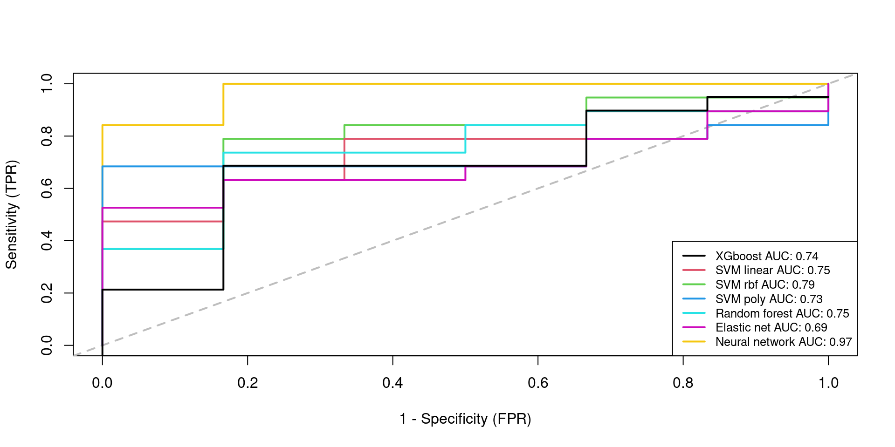

Biomarker prediction in cancer data
junio 3, 2024
Abstract
Here we perform a prediction of candidate biomarkers in cancer cfRNA sequencing data.
1 Importing processed and filtered data
We start by importing the previously filtered, normalized RNA-seq data and the differential expressed genes from the training dataset.
library(SummarizedExperiment)
library(edgeR)
dgeR.filt <- readRDS(file.path("_processed_data", "dgeR.filt.rds"))
seR.filt <- readRDS(file.path("_processed_data", "seR.filt.rds"))
dgeB.filt <- readRDS(file.path("_processed_data", "dgeB.filt.rds"))
seB.filt <- readRDS(file.path("_processed_data", "seB.filt.rds"))
dgeR.filt.training <- readRDS(file.path("_processed_data",
"dgeR.filt.training.rds"))
seR.filt.training <- readRDS(file.path("_processed_data",
"seR.filt.training.rds"))
dgeB.filt.testing <- readRDS(file.path("_processed_data",
"dgeB.filt.testing.rds"))
seB.filt.testing <- readRDS(file.path("_processed_data",
"seB.filt.testing.rds"))
DEgenes.trainingR <- readRDS(file.path("_processed_data",
"DEgenes.trainingR.rds"))Create a subset with the differential expressed genes from the training dataset from Roskams-Hieter et al. (2022).
Train-testing subset creation: Intersection between differential expressed genes from training set from Roskams-Hieter et al. (2022) and lowly expressed genes from testing set.
set.seed(111)
intersection.genes <- intersect(rownames(dgeB.filt.testing),DEgenes.trainingR)
length(intersection.genes)
[1] 561
dgeR.intercept <- dgeR.filt.training[intersection.genes,]
dim(dgeR.intercept)
[1] 561 58seR.intercept <- seR.filt.training[intersection.genes,]
dim(seR.intercept)
[1] 561 58
dgeB.intercept <- dgeB.filt.testing[intersection.genes,]
dim(dgeB.intercept)
[1] 561 25seB.intercept <- seB.filt.testing[intersection.genes,]
dim(seB.intercept)
[1] 561 251.1 Dataframes creation
1.1.1 Training data
training.df <- data.frame(Tumor = seR.intercept$Tumor,
scale(t(assays(seR.intercept)$logCPM), scale = TRUE, center = TRUE))
len <- length(training.df)
#colnames(training.df)[2:len] <- rowData(seR.intercept)[["Symbol"]]1.1.2 Testing data
testing.df <- data.frame(Tumor = seB.intercept$Tumor,
scale(t(assays(seB.intercept)$logCPM), scale = TRUE, center = TRUE))
len <- length(testing.df)
#colnames(testing.df)[2:len] <- rowData(seB.intercept)[["Symbol"]]2 Performance metrics
Given the application of the current paper, the False Negative Rate (FNR) metric is a particularly relevant metric, since it would imply classifying as healthy an individual with cancer. Therefore, that patients will not receive treatment, which will cause serious consequences. Furthermore, it could also be considered the False Positive Rate (FPR), which results in an undesirable situation where a proportion of healthy individuals are categorized as ill. This would subject a healthy patient to unnecessary treatment and its potential side effects. However, since the expected consequences are not that severe, FNR is prioritized in the analysis.
FNR <- function(proba.pred, truth){
class.pred <- as.numeric(proba.pred > 0.35)
conf <- table(truth, class.pred)
print(conf)
FNR <- conf[2, 1] / sum(conf[2, 1], conf[2, 2])
return(FNR)
}FPR <- function(proba.pred, truth){
class.pred <- as.numeric(proba.pred > 0.35)
conf <- table(truth, class.pred)
print(conf)
FPR <- conf[1, 2] / sum(conf[1, 1], conf[1, 2])
return(FPR)
}3 XGBOOST
modelLookup("xgbTree")
model parameter label forReg forClass
1 xgbTree nrounds # Boosting Iterations TRUE TRUE
2 xgbTree max_depth Max Tree Depth TRUE TRUE
3 xgbTree eta Shrinkage TRUE TRUE
4 xgbTree gamma Minimum Loss Reduction TRUE TRUE
5 xgbTree colsample_bytree Subsample Ratio of Columns TRUE TRUE
6 xgbTree min_child_weight Minimum Sum of Instance Weight TRUE TRUE
7 xgbTree subsample Subsample Percentage TRUE TRUE
probModel
1 TRUE
2 TRUE
3 TRUE
4 TRUE
5 TRUE
6 TRUE
7 TRUE# CV technique which will be passed into the train() function
train_control = trainControl(method = "cv", number = 10, search = "grid",
## Evaluate performance using
## the following function
summaryFunction = twoClassSummary,
allowParallel = TRUE,
# Estimate class probabilities
classProbs=TRUE)
# tuning grid
set.seed(111)
#xgboostGrid <- expand.grid(max_depth = c(3, 5, 7, 9),
# nrounds = (1:10)*20, # number of trees
# eta = c(0.2,0.3,0.4),
# gamma = c(0.5,1),
# subsample = c(0.5, 0.6, 0.7), # common value: between 0.5 and 1
# min_child_weight = c(1,2,3),
# colsample_bytree = c(0.5, 0.6, 0.7) # common value: between 0.5 and 1
# )
xgboostGrid <- expand.grid(max_depth = c(4, 5, 6, 7), nrounds = (1:10)*20,eta = c(0.2,0.4),gamma = c(0.6),subsample = c(1),min_child_weight = c(1),colsample_bytree = c(0.7))
# auc = 0.64 fnr= 0.47 fpr = 0. max_depth = c(3, 5, 7, 9), nrounds = (1:10)*20,eta = c(0.2,0.3,0.4),gamma = c(0.5),subsample = c(1),min_child_weight = c(1),colsample_bytree = c(0.8)
# auc = 0.71 fnr= 0.47 fpr = 0.16. max_depth = c(3, 4, 5, 6, 7)
# auc = 0.75 fnr= 0.47 fpr = 0.16. colsample_bytree = c(0.7)
# auc = 0.58, fnr = 0.52, fpr=0. min_child_weight = c(2)
# auc = 0.68, fnr = 0.47, fpr=0. min_child_weight = c(3)
# auc = 0.56, fnr=0.57, fpr=0.eta = c(0.2,0.3,0.4, 0.5),gamma = c(0.5,1) colsample_bytree = c(0.7,0.8)
# auc = 0.73, fnr=0.47, fpr=0.subsample = c(0.8)
# auc = 0.57, fnr=0.47, fpr=0.33.subsample = c(0.8)
#auc = 0.52, fnr=0.57, fpr=0. max_depth = c(4, 5, 6, 7), nrounds = (1:10)*20,eta = c(0.2,0.3,0.4),gamma = c(0.5),subsample = c(0.8),min_child_weight = c(1),colsample_bytree = c(0.7))
# auc = 0.74, fnr = 0.52, fpr=0.eta = c(0.2,0.4)
# hyperparaemeter search for XGboost classifier tree model
model = caret::train(Tumor~., data = training.df,
######ALTERNATIVE#######
#x = trainMNX,
#y = trainMNY,
########################
method = "xgbTree",
trControl = train_control,
metric = "ROC",
tuneGrid = xgboostGrid,
verbosity = 0,
verbose = TRUE,
#num.threads = 16,
#nthreads = 16 #cores in use
)
print(model)
eXtreme Gradient Boosting
58 samples
561 predictors
2 classes: 'no', 'yes'
No pre-processing
Resampling: Cross-Validated (10 fold)
Summary of sample sizes: 53, 53, 52, 52, 52, 52, ...
Resampling results across tuning parameters:
eta max_depth nrounds ROC Sens Spec
0.2 4 20 0.8611111 0.8333333 0.6833333
0.2 4 40 0.8888889 0.8333333 0.7833333
0.2 4 60 0.8888889 0.8333333 0.7833333
0.2 4 80 0.8888889 0.8333333 0.7833333
0.2 4 100 0.8888889 0.8333333 0.7833333
0.2 4 120 0.8888889 0.8333333 0.7833333
0.2 4 140 0.8888889 0.8333333 0.7833333
0.2 4 160 0.8888889 0.8333333 0.7833333
0.2 4 180 0.8888889 0.8333333 0.7833333
0.2 4 200 0.8888889 0.8333333 0.7833333
0.2 5 20 0.8666667 0.8333333 0.6500000
0.2 5 40 0.8777778 0.8666667 0.6500000
0.2 5 60 0.8777778 0.8666667 0.6500000
0.2 5 80 0.8777778 0.8666667 0.6500000
0.2 5 100 0.8777778 0.8666667 0.6500000
0.2 5 120 0.8777778 0.8666667 0.6500000
0.2 5 140 0.8777778 0.8666667 0.6500000
0.2 5 160 0.8777778 0.8666667 0.6500000
0.2 5 180 0.8777778 0.8666667 0.6500000
0.2 5 200 0.8777778 0.8666667 0.6500000
0.2 6 20 0.9166667 0.8666667 0.7333333
0.2 6 40 0.9277778 0.8666667 0.8000000
0.2 6 60 0.9277778 0.8666667 0.8000000
0.2 6 80 0.9277778 0.8666667 0.8000000
0.2 6 100 0.9277778 0.8666667 0.8000000
0.2 6 120 0.9277778 0.8666667 0.8000000
0.2 6 140 0.9277778 0.8666667 0.8000000
0.2 6 160 0.9277778 0.8666667 0.8000000
0.2 6 180 0.9277778 0.8666667 0.8000000
0.2 6 200 0.9277778 0.8666667 0.8000000
0.2 7 20 0.9333333 0.8666667 0.6833333
0.2 7 40 0.9111111 0.8666667 0.6833333
0.2 7 60 0.9111111 0.8666667 0.6833333
0.2 7 80 0.9111111 0.8666667 0.6833333
0.2 7 100 0.9111111 0.8666667 0.6833333
0.2 7 120 0.9111111 0.8666667 0.6833333
0.2 7 140 0.9111111 0.8666667 0.6833333
0.2 7 160 0.9111111 0.8666667 0.6833333
0.2 7 180 0.9111111 0.8666667 0.6833333
0.2 7 200 0.9111111 0.8666667 0.6833333
0.4 4 20 0.9444444 0.8666667 0.7500000
0.4 4 40 0.9444444 0.8666667 0.7500000
0.4 4 60 0.9444444 0.8666667 0.7500000
0.4 4 80 0.9444444 0.8666667 0.7500000
0.4 4 100 0.9444444 0.8666667 0.7500000
0.4 4 120 0.9444444 0.8666667 0.7500000
0.4 4 140 0.9444444 0.8666667 0.7500000
0.4 4 160 0.9444444 0.8666667 0.7500000
0.4 4 180 0.9444444 0.8666667 0.7500000
0.4 4 200 0.9444444 0.8666667 0.7500000
0.4 5 20 0.8833333 0.8000000 0.6666667
0.4 5 40 0.8833333 0.8000000 0.6666667
0.4 5 60 0.8833333 0.8000000 0.6666667
0.4 5 80 0.8833333 0.8000000 0.6666667
0.4 5 100 0.8833333 0.8000000 0.6666667
0.4 5 120 0.8833333 0.8000000 0.6666667
0.4 5 140 0.8833333 0.8000000 0.6666667
0.4 5 160 0.8833333 0.8000000 0.6666667
0.4 5 180 0.8833333 0.8000000 0.6666667
0.4 5 200 0.8833333 0.8000000 0.6666667
0.4 6 20 0.9111111 0.8333333 0.6666667
0.4 6 40 0.9111111 0.8333333 0.7166667
0.4 6 60 0.9111111 0.8333333 0.7166667
0.4 6 80 0.9111111 0.8333333 0.7166667
0.4 6 100 0.9111111 0.8333333 0.7166667
0.4 6 120 0.9111111 0.8333333 0.7166667
0.4 6 140 0.9111111 0.8333333 0.7166667
0.4 6 160 0.9111111 0.8333333 0.7166667
0.4 6 180 0.9111111 0.8333333 0.7166667
0.4 6 200 0.9111111 0.8333333 0.7166667
0.4 7 20 0.9888889 0.9333333 0.8833333
0.4 7 40 0.9888889 0.9333333 0.8833333
0.4 7 60 0.9888889 0.9333333 0.8833333
0.4 7 80 0.9888889 0.9333333 0.8833333
0.4 7 100 0.9888889 0.9333333 0.8833333
0.4 7 120 0.9888889 0.9333333 0.8833333
0.4 7 140 0.9888889 0.9333333 0.8833333
0.4 7 160 0.9888889 0.9333333 0.8833333
0.4 7 180 0.9888889 0.9333333 0.8833333
0.4 7 200 0.9888889 0.9333333 0.8833333
Tuning parameter 'gamma' was held constant at a value of 0.6
Tuning
Tuning parameter 'min_child_weight' was held constant at a value of 1
Tuning parameter 'subsample' was held constant at a value of 1
ROC was used to select the optimal model using the largest value.
The final values used for the model were nrounds = 20, max_depth = 7, eta
= 0.4, gamma = 0.6, colsample_bytree = 0.7, min_child_weight = 1 and
subsample = 1.plot(model)
#predict on test data
pred.y <- predict(model, testing.df, type = "prob")[,2]
# out of sample performance metrics
test.y <- as.numeric(testing.df[, 1]) -1
pROC::auc(test.y, pred.y)
Setting levels: control = 0, case = 1
Setting direction: controls < cases
Area under the curve: 0.7368
FNR(pred.y, test.y)
class.pred
truth 0 1
0 5 1
1 7 12
[1] 0.3684211FPR(pred.y, test.y)
class.pred
truth 0 1
0 5 1
1 7 12
[1] 0.1666667# Add to output
res.testing[1, ] <- c(pROC::auc(test.y, pred.y), FNR(pred.y, test.y), FPR(pred.y, test.y))
Setting levels: control = 0, case = 1
Setting direction: controls < casesrownames(res.testing)[nrow(res.testing)] <- 'XGBOOST'4 ADABOOST
Not used in the final version due to poor performance and slow training.
modelLookup("ada")
model parameter label forReg forClass probModel
1 ada iter #Trees FALSE TRUE TRUE
2 ada maxdepth Max Tree Depth FALSE TRUE TRUE
3 ada nu Learning Rate FALSE TRUE TRUE# CV technique which will be passed into the train() function
train_control = trainControl(method = "cv", number = 10, search = "grid",
## Evaluate performance using
## the following function
summaryFunction = twoClassSummary,
allowParallel = TRUE,
# Estimate class probabilities
classProbs=TRUE)
# tuning grid
set.seed(111)
adaGrid <- expand.grid(iter = c(50),
maxdepth = c(1,2),
nu = c(0,0.01,0.05)
)
#adaGrid <- expand.grid(iter = c(50, 100, 200, 500),
# maxdepth = c(1, 2, 3, 4, 5),
# nu = c(0, 0.01, 0.05, 0.1, 0.2))
# auc = 0.67, fnr=0.52, fpr=0. iter = c(50), maxdepth = c(1,2),nu = c(0,0.01,0.05))
# hyperparaemeter search for adaboost classifier tree model
model = caret::train(Tumor~., data = training.df,
method = "ada",
trControl = train_control,
metric = "ROC",
tuneGrid = adaGrid,
loss = "exponential",
type = "discrete"
)
print(model)plot(model)#predict on test data
pred.y <- predict(model, testing.df, type = "prob")[,2]
# out of sample performance metrics
test.y <- as.numeric(testing.df[, 1]) -1
pROC::auc(test.y, pred.y)
FNR(pred.y, test.y)
FPR(pred.y, test.y)# Add to output
res.testing <- rbind.data.frame(res.testing, c(pROC::auc(test.y, pred.y), FNR(pred.y, test.y), FPR(pred.y, test.y)))
Setting levels: control = 0, case = 1
Setting direction: controls < casesrownames(res.testing)[nrow(res.testing)] <- 'ADABOOST'5 SVM models
5.1 svmLinearWeights (linear kernel + class weights)
modelLookup("svmLinearWeights")
model parameter label forReg forClass probModel
1 svmLinearWeights cost Cost FALSE TRUE TRUE
2 svmLinearWeights weight Class Weight FALSE TRUE TRUEtrain_control = trainControl(method = "cv", number = 10, search = "grid",
## Evaluate performance using
## the following function
summaryFunction = twoClassSummary,
allowParallel = TRUE,
# Estimate class probabilities
classProbs=TRUE)
set.seed(50)
# Customzing the tuning grid
svmgrid <- expand.grid(cost = c(0.01,0.015, 0.02),
weight = c(0.45)
)
#svmgrid <- expand.grid(cost = c(0.01, 0.05,0.5,1,3, 5, 10), weight = c(0.01, 0.05,0.5,1,3,5,10))
# auc = 0.70, fnr = 0.2, fpr = 0.33. cost = c(0.01, 0.05,0.5,1,3, 5, 10), weight = c(0.01, 0.05,0.5,1,3,5,10)
# auc = 0.72, fnr = 0.31, fpr = 0.33. (cost = c(0.01,0.015, 0.02),weight = c(0.1, 0.2, 0.25, 0.3, 0.35, 0.4, 0.5)
#empitjora. cost = c(0.015, 0.02)
#auc = 0.73, fnr=0.31, fpr=0.33. cost = c(0.01,0.015, 0.02), weight = c(0.4, 0.5)
#auc = 0.74, fnr=0.31, fpr=0.33. weight = c(0.45)
# training a svm classifier with liearn kernel model while tuning parameters
model = caret::train(Tumor~., data = training.df,
method = "svmLinearWeights",
trControl = train_control,
metric = "ROC",
tuneGrid = svmgrid)
# summarizing the results
print(model)
Linear Support Vector Machines with Class Weights
58 samples
561 predictors
2 classes: 'no', 'yes'
No pre-processing
Resampling: Cross-Validated (10 fold)
Summary of sample sizes: 52, 52, 52, 52, 52, 53, ...
Resampling results across tuning parameters:
cost ROC Sens Spec
0.010 0.9777778 1.0000000 0.8333333
0.015 0.9777778 0.9666667 0.9000000
0.020 0.9777778 0.9666667 0.8666667
Tuning parameter 'weight' was held constant at a value of 0.45
ROC was used to select the optimal model using the largest value.
The final values used for the model were cost = 0.01 and weight = 0.45.plot(model)
#predict on test data
pred.y <- predict(model, testing.df, type = "prob")[,2]
# out of sample performance metrics
test.y <- as.numeric(testing.df[, 1]) -1
pROC::auc(test.y, pred.y)
Setting levels: control = 0, case = 1
Setting direction: controls < cases
Area under the curve: 0.7456
FNR(pred.y, test.y)
class.pred
truth 0 1
0 2 4
1 2 17
[1] 0.1052632FPR(pred.y, test.y)
class.pred
truth 0 1
0 2 4
1 2 17
[1] 0.6666667# Add to output
res.testing <- rbind.data.frame(res.testing, c(pROC::auc(test.y, pred.y), FNR(pred.y, test.y), FPR(pred.y, test.y)))
Setting levels: control = 0, case = 1
Setting direction: controls < casesrownames(res.testing)[nrow(res.testing)] <- 'SVMLinear'5.2 svmRadial (Support Vector Machines with Radial Basis Function Kernel)
modelLookup("svmRadial")
model parameter label forReg forClass probModel
1 svmRadial sigma Sigma TRUE TRUE TRUE
2 svmRadial C Cost TRUE TRUE TRUEtrain_control = trainControl(method = "cv", number = 10, search = "grid",
## Evaluate performance using
## the following function
summaryFunction = twoClassSummary,
allowParallel = TRUE,
# Estimate class probabilities
classProbs=TRUE)
set.seed(50)
svmgrid <- expand.grid(sigma=c(0.01, 0.05,0.5,1,3, 5, 10), C = c(0.01, 0.05,0.5,1,3,5,10))
# Customzing the tuning grid
#svmgrid <- expand.grid(sigma = c(0.01, 0.05,0.5,1,3, 5, 10),
# C = c(1, 1.1, 1.2, 1.3, 1.4,1.6,1.8)
# )
# auc = 0.67. sigma = 0.01 and C = 3. sigma = c(0.01, 0.05,0.5,1,3, 5, 10), C = c(0.01, 0.05,0.5,1,3,5,10)
# auc = 0.67. sigma = 0.01 and C = 2. sigma = c(0.01, 0.05,0.5,1,3, 5, 10), C = c(0.01, 0.05,0.5,1,2,3,4,5,10)
# auc = 0.67. sigma = 0.01 and C = 1.1. sigma = c(0.01, 0.05,0.5,1,3, 5, 10),C = c(1, 1.1, 1.2, 1.3, 1.4,1.6,1.8)
# training a svm with rbf kernel classifier model while tuning parameters
model = caret::train(Tumor~., data = training.df,
method = "svmRadial",
trControl = train_control,
metric = "ROC",
tuneGrid = svmgrid)
maximum number of iterations reached 0.00268881 0.002650758maximum number of iterations reached -7.276945e-05 -7.20996e-05maximum number of iterations reached -7.6153e-05 -7.545203e-05maximum number of iterations reached -7.6153e-05 -7.545203e-05maximum number of iterations reached -7.6153e-05 -7.545203e-05maximum number of iterations reached -7.6153e-05 -7.545203e-05maximum number of iterations reached -7.6153e-05 -7.545203e-05maximum number of iterations reached -0.0001400671 -0.0001335992maximum number of iterations reached -0.0001452837 -0.0001385754maximum number of iterations reached -0.0001452837 -0.0001385754maximum number of iterations reached -0.0001452837 -0.0001385754maximum number of iterations reached -0.0001452837 -0.0001385754maximum number of iterations reached -0.0001452837 -0.0001385754maximum number of iterations reached 0.001170128 0.001162313maximum number of iterations reached -7.450682e-05 -7.382098e-05maximum number of iterations reached -7.6153e-05 -7.545203e-05maximum number of iterations reached -7.6153e-05 -7.545203e-05maximum number of iterations reached -7.6153e-05 -7.545203e-05maximum number of iterations reached -7.6153e-05 -7.545203e-05maximum number of iterations reached -7.6153e-05 -7.545203e-05maximum number of iterations reached -0.0001418675 -0.0001353166maximum number of iterations reached -0.0001452837 -0.0001385754maximum number of iterations reached -0.0001452837 -0.0001385754maximum number of iterations reached -0.0001452837 -0.0001385754maximum number of iterations reached -0.0001452837 -0.0001385754maximum number of iterations reached -0.0001452837 -0.0001385754maximum number of iterations reached 0.00180695 0.001781904maximum number of iterations reached -7.381918e-05 -7.313968e-05maximum number of iterations reached -7.6153e-05 -7.545203e-05maximum number of iterations reached -7.6153e-05 -7.545203e-05maximum number of iterations reached -7.6153e-05 -7.545203e-05maximum number of iterations reached -7.6153e-05 -7.545203e-05maximum number of iterations reached -7.6153e-05 -7.545203e-05maximum number of iterations reached -0.0001414372 -0.0001349062maximum number of iterations reached -0.0001452837 -0.0001385754maximum number of iterations reached -0.0001452837 -0.0001385754maximum number of iterations reached -0.0001452837 -0.0001385754maximum number of iterations reached -0.0001452837 -0.0001385754maximum number of iterations reached -0.0001452837 -0.0001385754maximum number of iterations reached 0.002120339 0.002089864maximum number of iterations reached -7.195484e-05 -7.12925e-05maximum number of iterations reached -7.6153e-05 -7.545203e-05maximum number of iterations reached -7.6153e-05 -7.545203e-05maximum number of iterations reached -7.6153e-05 -7.545203e-05maximum number of iterations reached -7.6153e-05 -7.545203e-05maximum number of iterations reached -7.6153e-05 -7.545203e-05maximum number of iterations reached -0.0001406794 -0.0001341833maximum number of iterations reached -0.0001452837 -0.0001385754maximum number of iterations reached -0.0001452837 -0.0001385754maximum number of iterations reached -0.0001452837 -0.0001385754maximum number of iterations reached -0.0001452837 -0.0001385754maximum number of iterations reached -0.0001452837 -0.0001385754maximum number of iterations reached 0.003420223 0.003370502maximum number of iterations reached -7.51796e-05 -7.448755e-05maximum number of iterations reached -7.6153e-05 -7.545203e-05maximum number of iterations reached -7.6153e-05 -7.545203e-05maximum number of iterations reached -7.6153e-05 -7.545203e-05maximum number of iterations reached -7.6153e-05 -7.545203e-05maximum number of iterations reached -7.6153e-05 -7.545203e-05maximum number of iterations reached -0.0001394993 -0.0001330577maximum number of iterations reached -0.0001452837 -0.0001385754maximum number of iterations reached -0.0001452837 -0.0001385754maximum number of iterations reached -0.0001452837 -0.0001385754maximum number of iterations reached -0.0001452837 -0.0001385754maximum number of iterations reached -0.0001452837 -0.0001385754maximum number of iterations reached 0.003413203 0.003359624maximum number of iterations reached -7.399193e-05 -7.331084e-05maximum number of iterations reached -7.6153e-05 -7.545203e-05maximum number of iterations reached -7.6153e-05 -7.545203e-05maximum number of iterations reached -7.6153e-05 -7.545203e-05maximum number of iterations reached -7.6153e-05 -7.545203e-05maximum number of iterations reached -7.6153e-05 -7.545203e-05maximum number of iterations reached -0.0001410354 -0.000134523maximum number of iterations reached -0.0001452837 -0.0001385754maximum number of iterations reached -0.0001452837 -0.0001385754maximum number of iterations reached -0.0001452837 -0.0001385754maximum number of iterations reached -0.0001452837 -0.0001385754maximum number of iterations reached -0.0001452837 -0.0001385754maximum number of iterations reached 0.004032239 0.003958937maximum number of iterations reached -7.369166e-05 -7.301331e-05maximum number of iterations reached -7.6153e-05 -7.545203e-05maximum number of iterations reached -7.6153e-05 -7.545203e-05maximum number of iterations reached -7.6153e-05 -7.545203e-05maximum number of iterations reached -7.6153e-05 -7.545203e-05maximum number of iterations reached -7.6153e-05 -7.545203e-05maximum number of iterations reached -0.0001451065 -0.0001384058maximum number of iterations reached -0.0001452837 -0.0001385754maximum number of iterations reached -0.0001452837 -0.0001385754maximum number of iterations reached -0.0001452837 -0.0001385754maximum number of iterations reached -0.0001452837 -0.0001385754maximum number of iterations reached -0.0001452837 -0.0001385754maximum number of iterations reached 0.003798631 0.003736572maximum number of iterations reached -7.259397e-05 -7.192574e-05maximum number of iterations reached -7.6153e-05 -7.545203e-05maximum number of iterations reached -7.6153e-05 -7.545203e-05maximum number of iterations reached -7.6153e-05 -7.545203e-05maximum number of iterations reached -7.6153e-05 -7.545203e-05maximum number of iterations reached -7.6153e-05 -7.545203e-05maximum number of iterations reached -0.0001429317 -0.0001363316maximum number of iterations reached -0.0001452837 -0.0001385754maximum number of iterations reached -0.0001452837 -0.0001385754maximum number of iterations reached -0.0001452837 -0.0001385754maximum number of iterations reached -0.0001452837 -0.0001385754maximum number of iterations reached -0.0001452837 -0.0001385754
# summarizing the results
print(model)
Support Vector Machines with Radial Basis Function Kernel
58 samples
561 predictors
2 classes: 'no', 'yes'
No pre-processing
Resampling: Cross-Validated (10 fold)
Summary of sample sizes: 52, 52, 52, 52, 52, 53, ...
Resampling results across tuning parameters:
sigma C ROC Sens Spec
0.01 0.01 0.74444444 0.7000000 0.7333333
0.01 0.05 0.73333333 0.7333333 0.7333333
0.01 0.50 0.93333333 0.6333333 0.7333333
0.01 1.00 0.94444444 0.8333333 0.9000000
0.01 3.00 0.95555556 0.9000000 0.9000000
0.01 5.00 0.95555556 0.8666667 0.9000000
0.01 10.00 0.95555556 0.8666667 0.9000000
0.05 0.01 0.07222222 1.0000000 0.0000000
0.05 0.05 0.07222222 1.0000000 0.0000000
0.05 0.50 0.07222222 1.0000000 0.0000000
0.05 1.00 0.07222222 1.0000000 0.0000000
0.05 3.00 0.07222222 1.0000000 0.0000000
0.05 5.00 0.07222222 1.0000000 0.0000000
0.05 10.00 0.07222222 1.0000000 0.0000000
0.50 0.01 0.50000000 1.0000000 0.0000000
0.50 0.05 0.50000000 1.0000000 0.0000000
0.50 0.50 0.50000000 1.0000000 0.0000000
0.50 1.00 0.50000000 1.0000000 0.0000000
0.50 3.00 0.50000000 1.0000000 0.0000000
0.50 5.00 0.50000000 1.0000000 0.0000000
0.50 10.00 0.50000000 1.0000000 0.0000000
1.00 0.01 0.50000000 1.0000000 0.0000000
1.00 0.05 0.50000000 1.0000000 0.0000000
1.00 0.50 0.50000000 1.0000000 0.0000000
1.00 1.00 0.50000000 1.0000000 0.0000000
1.00 3.00 0.50000000 1.0000000 0.0000000
1.00 5.00 0.50000000 1.0000000 0.0000000
1.00 10.00 0.50000000 1.0000000 0.0000000
3.00 0.01 0.50000000 1.0000000 0.0000000
3.00 0.05 0.50000000 1.0000000 0.0000000
3.00 0.50 0.50000000 1.0000000 0.0000000
3.00 1.00 0.50000000 1.0000000 0.0000000
3.00 3.00 0.50000000 1.0000000 0.0000000
3.00 5.00 0.50000000 1.0000000 0.0000000
3.00 10.00 0.50000000 1.0000000 0.0000000
5.00 0.01 0.50000000 1.0000000 0.0000000
5.00 0.05 0.50000000 1.0000000 0.0000000
5.00 0.50 0.50000000 1.0000000 0.0000000
5.00 1.00 0.50000000 1.0000000 0.0000000
5.00 3.00 0.50000000 1.0000000 0.0000000
5.00 5.00 0.50000000 1.0000000 0.0000000
5.00 10.00 0.50000000 1.0000000 0.0000000
10.00 0.01 0.50000000 1.0000000 0.0000000
10.00 0.05 0.50000000 1.0000000 0.0000000
10.00 0.50 0.50000000 1.0000000 0.0000000
10.00 1.00 0.50000000 1.0000000 0.0000000
10.00 3.00 0.50000000 1.0000000 0.0000000
10.00 5.00 0.50000000 1.0000000 0.0000000
10.00 10.00 0.50000000 1.0000000 0.0000000
ROC was used to select the optimal model using the largest value.
The final values used for the model were sigma = 0.01 and C = 3.plot(model)
#predict on test data
pred.y <- predict(model, testing.df, type = "prob")[,2]
# out of sample performance metrics
test.y <- as.numeric(testing.df[, 1]) -1
pROC::auc(test.y, pred.y)
Setting levels: control = 0, case = 1
Setting direction: controls < cases
Area under the curve: 0.7895
FNR(pred.y, test.y)
class.pred
truth 0 1
0 2 4
1 3 16
[1] 0.1578947FPR(pred.y, test.y)
class.pred
truth 0 1
0 2 4
1 3 16
[1] 0.6666667# Add to output
res.testing <- rbind.data.frame(res.testing, c(pROC::auc(test.y, pred.y), FNR(pred.y, test.y), FPR(pred.y, test.y)))
Setting levels: control = 0, case = 1
Setting direction: controls < casesrownames(res.testing)[nrow(res.testing)] <- 'SVMRadial'5.3 svmPoly (Support Vector Machines with Polynomial Kernel)
modelLookup("svmPoly")
model parameter label forReg forClass probModel
1 svmPoly degree Polynomial Degree TRUE TRUE TRUE
2 svmPoly scale Scale TRUE TRUE TRUE
3 svmPoly C Cost TRUE TRUE TRUEtrain_control = trainControl(method = "cv", number = 10, search = "grid",
## Evaluate performance using
## the following function
summaryFunction = twoClassSummary,
allowParallel = TRUE,
# Estimate class probabilities
classProbs=TRUE)
set.seed(111)
svmgrid <- expand.grid(degree = c(2,3,4,5),
scale = c(0.001,0.01,0.5,1),
C = c(0.1,0.5,1,5,10, 100)
)
# training a svm with poly kernel classifier tree model while tuning parameters
model = caret::train(Tumor~., data = training.df,
method = "svmPoly",
trControl = train_control,
metric = "ROC",
tuneGrid = svmgrid)
print(model)
Support Vector Machines with Polynomial Kernel
58 samples
561 predictors
2 classes: 'no', 'yes'
No pre-processing
Resampling: Cross-Validated (10 fold)
Summary of sample sizes: 53, 53, 52, 52, 52, 52, ...
Resampling results across tuning parameters:
degree scale C ROC Sens Spec
2 0.001 0.1 0.8388889 0.6666667 0.7833333
2 0.001 0.5 0.9777778 0.7666667 0.8166667
2 0.001 1.0 0.9888889 0.9000000 0.8166667
2 0.001 5.0 0.9888889 0.9000000 0.8666667
2 0.001 10.0 0.9888889 0.9666667 0.8833333
2 0.001 100.0 0.9888889 0.9666667 0.8000000
2 0.010 0.1 0.9666667 0.9333333 0.8000000
2 0.010 0.5 0.9777778 0.9333333 0.8000000
2 0.010 1.0 0.9777778 0.9333333 0.8000000
2 0.010 5.0 0.9777778 0.9333333 0.7666667
2 0.010 10.0 0.9777778 0.9333333 0.8000000
2 0.010 100.0 0.9777778 0.9333333 0.7666667
2 0.500 0.1 0.8388889 0.8000000 0.7000000
2 0.500 0.5 0.8388889 0.8666667 0.6666667
2 0.500 1.0 0.8388889 0.8333333 0.7333333
2 0.500 5.0 0.8388889 0.8666667 0.7000000
2 0.500 10.0 0.8388889 0.8666667 0.7333333
2 0.500 100.0 0.8388889 0.8666667 0.6333333
2 1.000 0.1 0.8388889 0.8333333 0.7333333
2 1.000 0.5 0.8388889 0.7666667 0.6500000
2 1.000 1.0 0.8388889 0.8333333 0.7000000
2 1.000 5.0 0.8388889 0.8333333 0.7000000
2 1.000 10.0 0.8388889 0.8333333 0.6166667
2 1.000 100.0 0.8388889 0.8666667 0.6333333
3 0.001 0.1 0.8888889 0.7000000 0.7833333
3 0.001 0.5 0.9888889 0.8000000 0.8166667
3 0.001 1.0 1.0000000 0.9000000 0.8333333
3 0.001 5.0 0.9888889 0.9666667 0.8333333
3 0.001 10.0 0.9888889 0.9666667 0.8333333
3 0.001 100.0 0.9888889 0.9666667 0.8666667
3 0.010 0.1 0.9777778 0.9666667 0.9166667
3 0.010 0.5 0.9777778 0.9666667 0.8666667
3 0.010 1.0 0.9777778 0.9333333 0.8666667
3 0.010 5.0 0.9777778 0.9666667 0.9166667
3 0.010 10.0 0.9777778 0.9666667 0.9000000
3 0.010 100.0 0.9777778 0.9666667 0.9666667
3 0.500 0.1 0.9888889 0.9666667 0.8666667
3 0.500 0.5 0.9888889 0.9666667 0.8333333
3 0.500 1.0 0.9888889 0.9666667 0.8666667
3 0.500 5.0 0.9888889 0.9666667 0.8333333
3 0.500 10.0 0.9888889 0.9666667 0.8333333
3 0.500 100.0 0.9888889 0.9666667 0.8333333
3 1.000 0.1 0.9888889 0.9333333 0.8333333
3 1.000 0.5 0.9888889 0.9666667 0.8666667
3 1.000 1.0 0.9888889 0.9666667 0.8666667
3 1.000 5.0 0.9888889 0.9666667 0.8333333
3 1.000 10.0 0.9888889 0.9666667 0.8666667
3 1.000 100.0 0.9888889 0.9666667 0.8666667
4 0.001 0.1 0.9388889 0.7333333 0.7833333
4 0.001 0.5 0.9888889 0.9000000 0.8166667
4 0.001 1.0 1.0000000 0.9333333 0.8666667
4 0.001 5.0 1.0000000 0.9666667 0.8333333
4 0.001 10.0 1.0000000 0.9666667 0.8666667
4 0.001 100.0 1.0000000 0.9666667 0.8666667
4 0.010 0.1 0.9777778 0.9333333 0.8833333
4 0.010 0.5 0.9777778 0.9333333 0.9333333
4 0.010 1.0 0.9777778 0.9333333 0.9333333
4 0.010 5.0 0.9777778 0.9666667 0.8333333
4 0.010 10.0 0.9777778 0.9333333 0.8333333
4 0.010 100.0 0.9777778 0.9333333 0.8333333
4 0.500 0.1 0.8666667 0.8333333 0.4500000
4 0.500 0.5 0.8666667 0.8666667 0.4333333
4 0.500 1.0 0.8666667 0.8333333 0.4333333
4 0.500 5.0 0.8666667 0.8333333 0.4833333
4 0.500 10.0 0.8666667 0.8000000 0.4500000
4 0.500 100.0 0.8666667 0.8333333 0.4000000
4 1.000 0.1 0.8500000 0.8666667 0.4000000
4 1.000 0.5 0.7944444 0.7666667 0.4333333
4 1.000 1.0 0.8500000 0.8333333 0.3666667
4 1.000 5.0 0.8500000 0.9333333 0.4500000
4 1.000 10.0 0.7500000 0.8333333 0.4000000
4 1.000 100.0 0.8500000 0.8000000 0.4000000
5 0.001 0.1 0.9666667 0.8000000 0.8166667
5 0.001 0.5 1.0000000 0.9333333 0.8666667
5 0.001 1.0 1.0000000 0.9666667 0.8666667
5 0.001 5.0 1.0000000 0.9666667 0.8666667
5 0.001 10.0 1.0000000 0.9666667 0.8666667
5 0.001 100.0 1.0000000 0.9666667 0.8666667
5 0.010 0.1 0.9777778 0.9333333 0.8833333
5 0.010 0.5 0.9777778 0.9333333 0.9000000
5 0.010 1.0 0.9777778 0.9000000 0.8500000
5 0.010 5.0 0.9777778 0.9333333 0.8333333
5 0.010 10.0 0.9777778 0.9000000 0.8833333
5 0.010 100.0 0.9777778 0.9333333 0.8666667
5 0.500 0.1 0.9777778 0.9333333 0.7333333
5 0.500 0.5 0.9777778 0.9333333 0.6666667
5 0.500 1.0 0.9777778 0.9333333 0.7166667
5 0.500 5.0 0.9777778 0.9000000 0.7500000
5 0.500 10.0 0.9777778 0.9666667 0.7833333
5 0.500 100.0 0.9777778 0.9000000 0.8166667
5 1.000 0.1 0.9777778 0.9000000 0.8166667
5 1.000 0.5 0.9777778 0.9333333 0.6666667
5 1.000 1.0 0.9777778 0.9000000 0.7000000
5 1.000 5.0 0.9777778 0.9333333 0.8500000
5 1.000 10.0 0.9777778 0.9000000 0.7666667
5 1.000 100.0 0.9777778 0.9666667 0.7000000
ROC was used to select the optimal model using the largest value.
The final values used for the model were degree = 3, scale = 0.001 and C = 1.plot(model)
#predict on test data
pred.y <- predict(model, testing.df, type = "prob")[,2]
# out of sample performance metrics
test.y <- as.numeric(testing.df[, 1]) -1
pROC::auc(test.y, pred.y)
Setting levels: control = 0, case = 1
Setting direction: controls < cases
Area under the curve: 0.7281
FNR(pred.y, test.y)
class.pred
truth 0 1
0 1 5
1 4 15
[1] 0.2105263FPR(pred.y, test.y)
class.pred
truth 0 1
0 1 5
1 4 15
[1] 0.8333333# Add to output
res.testing <- rbind.data.frame(res.testing, c(pROC::auc(test.y, pred.y), FNR(pred.y, test.y), FPR(pred.y, test.y)))
Setting levels: control = 0, case = 1
Setting direction: controls < casesrownames(res.testing)[nrow(res.testing)] <- 'SVMPoly'6 Random forest
modelLookup("rf")
model parameter label forReg forClass probModel
1 rf mtry #Randomly Selected Predictors TRUE TRUE TRUEtrain_control = trainControl(method = "cv", number = 10, search = "grid",
## Evaluate performance using
## the following function
summaryFunction = twoClassSummary,
allowParallel = TRUE,
# Estimate class probabilities
classProbs=TRUE)
set.seed(111)
rfgrid <- expand.grid(mtry = c(1:30) #only parameter you can tune for rf in R
)
# training a randomForest classifier tree model while tuning parameters
model = caret::train(Tumor~., data = training.df,
method = "rf",
trControl = train_control,
metric = "ROC",
importance = T,
#manually set
ntree = 700, #was a good number
nodesize = 1, #default for classification
tuneGrid = rfgrid)
print(model)
Random Forest
58 samples
561 predictors
2 classes: 'no', 'yes'
No pre-processing
Resampling: Cross-Validated (10 fold)
Summary of sample sizes: 53, 53, 52, 52, 52, 52, ...
Resampling results across tuning parameters:
mtry ROC Sens Spec
1 0.9333333 0.9000000 0.7166667
2 0.9222222 0.8000000 0.7500000
3 0.9111111 0.8000000 0.7500000
4 0.9333333 0.8000000 0.7833333
5 0.9000000 0.8000000 0.7833333
6 0.9000000 0.8333333 0.7500000
7 0.8888889 0.8333333 0.6833333
8 0.8916667 0.8333333 0.7166667
9 0.9277778 0.8666667 0.7166667
10 0.8666667 0.8333333 0.6833333
11 0.9111111 0.8666667 0.7833333
12 0.8888889 0.8333333 0.7166667
13 0.9111111 0.8333333 0.7500000
14 0.9111111 0.9000000 0.7166667
15 0.8944444 0.8666667 0.7166667
16 0.8722222 0.8666667 0.7166667
17 0.9333333 0.8333333 0.7500000
18 0.9111111 0.8666667 0.7166667
19 0.9277778 0.8666667 0.7833333
20 0.9000000 0.8333333 0.7166667
21 0.8944444 0.8666667 0.7166667
22 0.9166667 0.8666667 0.7166667
23 0.9111111 0.8333333 0.7166667
24 0.8888889 0.8666667 0.7166667
25 0.9333333 0.9333333 0.7166667
26 0.9055556 0.8666667 0.7166667
27 0.9388889 0.8666667 0.7500000
28 0.9277778 0.8666667 0.7500000
29 0.9222222 0.9333333 0.7166667
30 0.9333333 0.8666667 0.7500000
ROC was used to select the optimal model using the largest value.
The final value used for the model was mtry = 27.plot(model)
#predict on test data
pred.y <- predict(model, testing.df, type = "prob")[,2]
# out of sample performance metrics
test.y <- as.numeric(testing.df[, 1]) -1
pROC::auc(test.y, pred.y)
Setting levels: control = 0, case = 1
Setting direction: controls < cases
Area under the curve: 0.7456
FNR(pred.y, test.y)
class.pred
truth 0 1
0 1 5
1 2 17
[1] 0.1052632FPR(pred.y, test.y)
class.pred
truth 0 1
0 1 5
1 2 17
[1] 0.8333333# Add to output
res.testing <- rbind.data.frame(res.testing, c(pROC::auc(test.y, pred.y), FNR(pred.y, test.y), FPR(pred.y, test.y)))
Setting levels: control = 0, case = 1
Setting direction: controls < casesrownames(res.testing)[nrow(res.testing)] <- 'RandomForest'#feature_importance <- randomForest::importance(model)
#sorted_importance <- feature_importance[order(-feature_importance[, #"MeanDecreaseGini"]), ]
#print(sorted_importance)7 Elastic net
modelLookup("glmnet")
model parameter label forReg forClass probModel
1 glmnet alpha Mixing Percentage TRUE TRUE TRUE
2 glmnet lambda Regularization Parameter TRUE TRUE TRUEtrain_control = trainControl(method = "cv", number = 10, search = "grid",
## Evaluate performance using
## the following function
summaryFunction = twoClassSummary,
allowParallel = TRUE,
# Estimate class probabilities
classProbs=TRUE)
set.seed(111)
netgrid <- expand.grid(alpha = c(0.1, 0.2, 0.5, 0.7, 0.9), # every time model selected 0 auc was 1
lambda = c(0,0.05,0.1, 0.2, 0.25, 0.3, 0.35, 0.4, 1, 5, 10) # 0 is logistic
)
# auc = 0.59. alpha = c(0, 0.005, 0.01, 0.015, 0.1, 0.2, 0.5, 0.7, 1),lambda = c(0.01, 0.1, 0.15, 0.2, 0.25, 0.3, 0.35, 0.4, 0.5,1). alpha = 0.005 and lambda = 1.
# auc = 0.70. lambda = c(0.01, 0.1, 0.15, 0.2, 0.25, 0.3, 0.35, 0.4, 0.5). alpha = 0.005 and lambda = 0.5.
# auc = 0.68. alpha = c(0.01, 0.015, 0.1, 0.2, 0.5, 0.7, 1) alpha = 0.01 and lambda = 0.5.
# auc = 0.70. alpha = c(0, 0.005, 0.01, 0.015, 0.1, 0.2, 0.5), lambda = c(0.01, 0.1, 0.15, 0.2, 0.25, 0.3, 0.35, 0.4). alpha = 0.005 and lambda = 0.4.
# training a elastic net classifier tree model while tuning parameters
model = caret::train(Tumor~., data = training.df,
method = "glmnet",
trControl = train_control,
metric = "ROC",
tuneGrid = netgrid)
# summarizing the results
print(model)
glmnet
58 samples
561 predictors
2 classes: 'no', 'yes'
No pre-processing
Resampling: Cross-Validated (10 fold)
Summary of sample sizes: 53, 53, 52, 52, 52, 52, ...
Resampling results across tuning parameters:
alpha lambda ROC Sens Spec
0.1 0.00 0.9888889 0.9000000 0.8500000
0.1 0.05 0.9888889 0.9000000 0.8000000
0.1 0.10 0.9888889 0.9000000 0.8000000
0.1 0.20 0.9722222 0.9000000 0.8000000
0.1 0.25 0.9833333 0.9000000 0.8000000
0.1 0.30 0.9833333 0.9000000 0.8000000
0.1 0.35 0.9722222 0.9000000 0.8000000
0.1 0.40 0.9722222 0.9000000 0.8000000
0.1 1.00 0.8722222 0.9000000 0.6833333
0.1 5.00 0.5000000 1.0000000 0.0000000
0.1 10.00 0.5000000 1.0000000 0.0000000
0.2 0.00 0.9722222 0.9000000 0.8500000
0.2 0.05 0.9722222 0.9000000 0.8000000
0.2 0.10 0.9722222 0.9000000 0.8000000
0.2 0.20 0.9722222 0.9000000 0.8000000
0.2 0.25 0.9611111 0.9000000 0.8000000
0.2 0.30 0.9444444 0.9000000 0.8000000
0.2 0.35 0.9444444 0.9000000 0.7666667
0.2 0.40 0.9444444 0.9000000 0.7666667
0.2 1.00 0.7777778 0.9666667 0.5000000
0.2 5.00 0.5000000 1.0000000 0.0000000
0.2 10.00 0.5000000 1.0000000 0.0000000
0.5 0.00 0.9611111 0.8666667 0.8166667
0.5 0.05 0.9555556 0.9333333 0.8500000
0.5 0.10 0.9333333 0.9000000 0.8166667
0.5 0.20 0.8833333 0.8666667 0.7000000
0.5 0.25 0.8722222 0.9000000 0.6333333
0.5 0.30 0.8222222 0.9000000 0.5333333
0.5 0.35 0.7666667 0.8666667 0.5000000
0.5 0.40 0.7277778 0.8333333 0.5000000
0.5 1.00 0.5000000 1.0000000 0.0000000
0.5 5.00 0.5000000 1.0000000 0.0000000
0.5 10.00 0.5000000 1.0000000 0.0000000
0.7 0.00 0.9444444 0.9000000 0.8166667
0.7 0.05 0.9333333 0.9000000 0.8166667
0.7 0.10 0.9111111 0.8666667 0.7500000
0.7 0.20 0.8000000 0.9000000 0.5666667
0.7 0.25 0.7500000 0.8333333 0.5000000
0.7 0.30 0.6611111 0.8333333 0.4333333
0.7 0.35 0.5944444 0.9000000 0.1666667
0.7 0.40 0.5000000 1.0000000 0.0000000
0.7 1.00 0.5000000 1.0000000 0.0000000
0.7 5.00 0.5000000 1.0000000 0.0000000
0.7 10.00 0.5000000 1.0000000 0.0000000
0.9 0.00 0.9333333 0.9000000 0.8500000
0.9 0.05 0.9000000 0.8666667 0.7500000
0.9 0.10 0.8500000 0.8666667 0.6666667
0.9 0.20 0.7166667 0.8333333 0.5000000
0.9 0.25 0.6166667 0.8000000 0.3333333
0.9 0.30 0.5111111 1.0000000 0.0000000
0.9 0.35 0.5000000 1.0000000 0.0000000
0.9 0.40 0.5000000 1.0000000 0.0000000
0.9 1.00 0.5000000 1.0000000 0.0000000
0.9 5.00 0.5000000 1.0000000 0.0000000
0.9 10.00 0.5000000 1.0000000 0.0000000
ROC was used to select the optimal model using the largest value.
The final values used for the model were alpha = 0.1 and lambda = 0.1.plot(model)
#predict on test data
pred.y <- predict(model, testing.df, type = "prob")[,2]
# out of sample performance metrics
test.y <- as.numeric(testing.df[, 1]) -1
pROC::auc(test.y, pred.y)
Setting levels: control = 0, case = 1
Setting direction: controls < cases
Area under the curve: 0.693
FNR(pred.y, test.y)
class.pred
truth 0 1
0 2 4
1 5 14
[1] 0.2631579FPR(pred.y, test.y)
class.pred
truth 0 1
0 2 4
1 5 14
[1] 0.6666667# Add to output
res.testing <- rbind.data.frame(res.testing, c(pROC::auc(test.y, pred.y), FNR(pred.y, test.y), FPR(pred.y, test.y)))
Setting levels: control = 0, case = 1
Setting direction: controls < casesrownames(res.testing)[nrow(res.testing)] <- 'ElasticNet'8 Keras NN
library(tensorflow)
Attaching package: 'tensorflow'
The following object is masked from 'package:caret':
trainlibrary(keras)
Attaching package: 'keras'
The following object is masked from 'package:BiocGenerics':
normalizelibrary(tfruns)
tensorflow::set_random_seed(111)Use gene names now. ADAboost was having a bug with with these names so this step was moved to this part.
Training data
training.df <- data.frame(Tumor = seR.intercept$Tumor,
scale(t(assays(seR.intercept)$logCPM), scale = TRUE, center = TRUE))
len <- length(training.df)
colnames(training.df)[2:len] <- rowData(seR.intercept)[["Symbol"]]Testing data
testing.df <- data.frame(Tumor = seB.intercept$Tumor,
scale(t(assays(seB.intercept)$logCPM), scale = TRUE, center = TRUE))
len <- length(testing.df)
colnames(testing.df)[2:len] <- rowData(seB.intercept)[["Symbol"]]x_train <- as.matrix(training.df[,-1])
y_train <- as.matrix(as.numeric(training.df[,1])-1)
x_test<- as.matrix(testing.df[,-1])
y_test <- as.matrix(as.numeric(testing.df[,1])-1)
x_train_shape <- length(colnames(x_train))#constraint_maxnorm(max_value = 2, axis = 0)
# bias_regularizer = regularizer_l2(0.01)
model <- keras_model_sequential()
model %>%
layer_dense(units = 1500, activation = 'relu',
input_shape = c(x_train_shape),
kernel_regularizer = regularizer_l1_l2(l1 = 0.00000001, l2 = 0.00001),
bias_regularizer = regularizer_l1_l2(l1 = 0.00001, l2 = 0.0001),
kernel_constraint =constraint_maxnorm(max_value = 2, axis = 0),
#bias_constraint =constraint_maxnorm(max_value = 3, axis = 0),
activity_regularizer= regularizer_l1_l2(l1 = 0.01, l2 = 0.00001),
) %>%
layer_dropout(rate = 0.5) %>%
layer_batch_normalization() %>%
layer_dense(units = 500, activation = 'relu',
kernel_regularizer = regularizer_l1_l2(l1 = 0.1, l2 = 0.1),
kernel_constraint = constraint_minmaxnorm(max_value = 2, min_value = 0, axis = 1),
bias_regularizer = regularizer_l1_l2(l1 = 0.00001, l2 = 0.000001),
#bias_constraint =constraint_maxnorm(max_value = 3, axis = 0),
activity_regularizer = regularizer_l1_l2(l1 = 0.1, l2 = 0.000001),
) %>%
layer_dropout(rate = 0.3) %>%
layer_batch_normalization() %>%
layer_dense(units = 1, activation = 'sigmoid')loss_fn <- loss_binary_crossentropy()
auc <- metric_auc()
adam <- optimizer_adam(learning_rate = 0.0001, ema_momentum = 0.99)
model %>% compile(
optimizer = adam,
loss = loss_fn,
metrics = "AUC"
)model %>% fit(x_train, y_train, epochs = 150, batch_size =5)
Epoch 1/150
12/12 - 1s - loss: 2113.9067 - auc: 0.6238 - 1s/epoch - 84ms/step
Epoch 2/150
12/12 - 0s - loss: 2023.2312 - auc: 0.6351 - 66ms/epoch - 6ms/step
Epoch 3/150
12/12 - 0s - loss: 1935.0557 - auc: 0.7143 - 60ms/epoch - 5ms/step
Epoch 4/150
12/12 - 0s - loss: 1849.0638 - auc: 0.7935 - 63ms/epoch - 5ms/step
Epoch 5/150
12/12 - 0s - loss: 1765.3984 - auc: 0.6196 - 62ms/epoch - 5ms/step
Epoch 6/150
12/12 - 0s - loss: 1683.6586 - auc: 0.8405 - 62ms/epoch - 5ms/step
Epoch 7/150
12/12 - 0s - loss: 1604.3063 - auc: 0.6839 - 61ms/epoch - 5ms/step
Epoch 8/150
12/12 - 0s - loss: 1526.7941 - auc: 0.7845 - 65ms/epoch - 5ms/step
Epoch 9/150
12/12 - 0s - loss: 1451.5165 - auc: 0.7768 - 66ms/epoch - 5ms/step
Epoch 10/150
12/12 - 0s - loss: 1378.1769 - auc: 0.9196 - 62ms/epoch - 5ms/step
Epoch 11/150
12/12 - 0s - loss: 1306.9674 - auc: 0.9065 - 67ms/epoch - 6ms/step
Epoch 12/150
12/12 - 0s - loss: 1237.8754 - auc: 0.8512 - 67ms/epoch - 6ms/step
Epoch 13/150
12/12 - 0s - loss: 1170.8612 - auc: 0.8220 - 63ms/epoch - 5ms/step
Epoch 14/150
12/12 - 0s - loss: 1105.7782 - auc: 0.8196 - 68ms/epoch - 6ms/step
Epoch 15/150
12/12 - 0s - loss: 1042.8875 - auc: 0.7994 - 62ms/epoch - 5ms/step
Epoch 16/150
12/12 - 0s - loss: 981.8745 - auc: 0.7339 - 66ms/epoch - 6ms/step
Epoch 17/150
12/12 - 0s - loss: 922.7252 - auc: 0.8940 - 64ms/epoch - 5ms/step
Epoch 18/150
12/12 - 0s - loss: 865.6814 - auc: 0.9399 - 66ms/epoch - 6ms/step
Epoch 19/150
12/12 - 0s - loss: 810.7270 - auc: 0.8673 - 70ms/epoch - 6ms/step
Epoch 20/150
12/12 - 0s - loss: 757.5825 - auc: 0.8345 - 65ms/epoch - 5ms/step
Epoch 21/150
12/12 - 0s - loss: 706.3023 - auc: 0.8321 - 63ms/epoch - 5ms/step
Epoch 22/150
12/12 - 0s - loss: 656.9178 - auc: 0.9137 - 66ms/epoch - 6ms/step
Epoch 23/150
12/12 - 0s - loss: 609.5785 - auc: 0.8685 - 63ms/epoch - 5ms/step
Epoch 24/150
12/12 - 0s - loss: 563.9918 - auc: 0.9423 - 63ms/epoch - 5ms/step
Epoch 25/150
12/12 - 0s - loss: 520.2892 - auc: 0.9173 - 71ms/epoch - 6ms/step
Epoch 26/150
12/12 - 0s - loss: 478.5826 - auc: 0.9179 - 62ms/epoch - 5ms/step
Epoch 27/150
12/12 - 0s - loss: 438.5147 - auc: 0.9857 - 64ms/epoch - 5ms/step
Epoch 28/150
12/12 - 0s - loss: 400.5921 - auc: 0.8786 - 65ms/epoch - 5ms/step
Epoch 29/150
12/12 - 0s - loss: 364.1777 - auc: 0.9643 - 69ms/epoch - 6ms/step
Epoch 30/150
12/12 - 0s - loss: 329.7297 - auc: 0.9470 - 65ms/epoch - 5ms/step
Epoch 31/150
12/12 - 0s - loss: 297.1255 - auc: 0.9321 - 65ms/epoch - 5ms/step
Epoch 32/150
12/12 - 0s - loss: 266.2651 - auc: 0.9714 - 69ms/epoch - 6ms/step
Epoch 33/150
12/12 - 0s - loss: 237.2941 - auc: 0.9315 - 71ms/epoch - 6ms/step
Epoch 34/150
12/12 - 0s - loss: 210.0003 - auc: 0.9679 - 71ms/epoch - 6ms/step
Epoch 35/150
12/12 - 0s - loss: 184.5664 - auc: 0.9685 - 70ms/epoch - 6ms/step
Epoch 36/150
12/12 - 0s - loss: 160.7209 - auc: 0.9887 - 64ms/epoch - 5ms/step
Epoch 37/150
12/12 - 0s - loss: 138.6783 - auc: 0.9857 - 61ms/epoch - 5ms/step
Epoch 38/150
12/12 - 0s - loss: 118.4997 - auc: 0.9738 - 66ms/epoch - 6ms/step
Epoch 39/150
12/12 - 0s - loss: 100.0956 - auc: 0.9768 - 68ms/epoch - 6ms/step
Epoch 40/150
12/12 - 0s - loss: 83.3834 - auc: 0.9470 - 69ms/epoch - 6ms/step
Epoch 41/150
12/12 - 0s - loss: 68.3865 - auc: 0.9048 - 63ms/epoch - 5ms/step
Epoch 42/150
12/12 - 0s - loss: 54.9629 - auc: 0.9917 - 60ms/epoch - 5ms/step
Epoch 43/150
12/12 - 0s - loss: 43.3439 - auc: 0.9702 - 62ms/epoch - 5ms/step
Epoch 44/150
12/12 - 0s - loss: 33.3953 - auc: 0.9845 - 64ms/epoch - 5ms/step
Epoch 45/150
12/12 - 0s - loss: 25.2836 - auc: 0.9976 - 63ms/epoch - 5ms/step
Epoch 46/150
12/12 - 0s - loss: 18.8536 - auc: 0.9893 - 64ms/epoch - 5ms/step
Epoch 47/150
12/12 - 0s - loss: 13.9455 - auc: 0.9196 - 68ms/epoch - 6ms/step
Epoch 48/150
12/12 - 0s - loss: 10.5289 - auc: 0.9982 - 63ms/epoch - 5ms/step
Epoch 49/150
12/12 - 0s - loss: 8.3803 - auc: 0.9423 - 69ms/epoch - 6ms/step
Epoch 50/150
12/12 - 0s - loss: 6.8573 - auc: 0.9839 - 68ms/epoch - 6ms/step
Epoch 51/150
12/12 - 0s - loss: 5.9742 - auc: 0.9768 - 63ms/epoch - 5ms/step
Epoch 52/150
12/12 - 0s - loss: 5.4299 - auc: 0.9357 - 63ms/epoch - 5ms/step
Epoch 53/150
12/12 - 0s - loss: 5.0250 - auc: 0.9298 - 66ms/epoch - 5ms/step
Epoch 54/150
12/12 - 0s - loss: 4.7439 - auc: 0.9863 - 64ms/epoch - 5ms/step
Epoch 55/150
12/12 - 0s - loss: 4.5923 - auc: 0.9863 - 66ms/epoch - 6ms/step
Epoch 56/150
12/12 - 0s - loss: 4.4641 - auc: 0.9851 - 65ms/epoch - 5ms/step
Epoch 57/150
12/12 - 0s - loss: 4.3333 - auc: 0.9750 - 64ms/epoch - 5ms/step
Epoch 58/150
12/12 - 0s - loss: 4.2689 - auc: 0.9893 - 63ms/epoch - 5ms/step
Epoch 59/150
12/12 - 0s - loss: 4.2297 - auc: 0.9685 - 65ms/epoch - 5ms/step
Epoch 60/150
12/12 - 0s - loss: 4.1626 - auc: 0.9887 - 63ms/epoch - 5ms/step
Epoch 61/150
12/12 - 0s - loss: 4.1246 - auc: 0.9946 - 63ms/epoch - 5ms/step
Epoch 62/150
12/12 - 0s - loss: 4.0869 - auc: 0.9935 - 64ms/epoch - 5ms/step
Epoch 63/150
12/12 - 0s - loss: 4.0726 - auc: 0.9792 - 64ms/epoch - 5ms/step
Epoch 64/150
12/12 - 0s - loss: 4.0368 - auc: 0.9780 - 66ms/epoch - 5ms/step
Epoch 65/150
12/12 - 0s - loss: 3.9607 - auc: 1.0000 - 66ms/epoch - 6ms/step
Epoch 66/150
12/12 - 0s - loss: 3.9672 - auc: 1.0000 - 67ms/epoch - 6ms/step
Epoch 67/150
12/12 - 0s - loss: 3.9407 - auc: 0.9839 - 71ms/epoch - 6ms/step
Epoch 68/150
12/12 - 0s - loss: 3.8820 - auc: 0.9940 - 67ms/epoch - 6ms/step
Epoch 69/150
12/12 - 0s - loss: 3.9031 - auc: 0.9810 - 64ms/epoch - 5ms/step
Epoch 70/150
12/12 - 0s - loss: 3.8489 - auc: 0.9744 - 65ms/epoch - 5ms/step
Epoch 71/150
12/12 - 0s - loss: 3.8654 - auc: 0.9821 - 63ms/epoch - 5ms/step
Epoch 72/150
12/12 - 0s - loss: 3.8262 - auc: 0.9750 - 63ms/epoch - 5ms/step
Epoch 73/150
12/12 - 0s - loss: 3.8035 - auc: 0.9637 - 63ms/epoch - 5ms/step
Epoch 74/150
12/12 - 0s - loss: 3.7606 - auc: 0.9929 - 66ms/epoch - 5ms/step
Epoch 75/150
12/12 - 0s - loss: 3.7517 - auc: 0.9976 - 65ms/epoch - 5ms/step
Epoch 76/150
12/12 - 0s - loss: 3.7170 - auc: 0.9524 - 63ms/epoch - 5ms/step
Epoch 77/150
12/12 - 0s - loss: 3.7901 - auc: 0.9792 - 63ms/epoch - 5ms/step
Epoch 78/150
12/12 - 0s - loss: 3.7586 - auc: 0.9821 - 69ms/epoch - 6ms/step
Epoch 79/150
12/12 - 0s - loss: 3.6860 - auc: 0.9976 - 66ms/epoch - 5ms/step
Epoch 80/150
12/12 - 0s - loss: 3.7206 - auc: 0.9857 - 65ms/epoch - 5ms/step
Epoch 81/150
12/12 - 0s - loss: 3.7343 - auc: 0.9619 - 67ms/epoch - 6ms/step
Epoch 82/150
12/12 - 0s - loss: 3.7411 - auc: 0.9738 - 63ms/epoch - 5ms/step
Epoch 83/150
12/12 - 0s - loss: 3.6818 - auc: 0.9952 - 65ms/epoch - 5ms/step
Epoch 84/150
12/12 - 0s - loss: 3.6692 - auc: 0.9946 - 67ms/epoch - 6ms/step
Epoch 85/150
12/12 - 0s - loss: 3.6500 - auc: 0.9762 - 64ms/epoch - 5ms/step
Epoch 86/150
12/12 - 0s - loss: 3.6793 - auc: 0.9804 - 63ms/epoch - 5ms/step
Epoch 87/150
12/12 - 0s - loss: 3.6457 - auc: 0.9810 - 68ms/epoch - 6ms/step
Epoch 88/150
12/12 - 0s - loss: 3.5832 - auc: 0.9768 - 65ms/epoch - 5ms/step
Epoch 89/150
12/12 - 0s - loss: 3.6147 - auc: 0.9595 - 64ms/epoch - 5ms/step
Epoch 90/150
12/12 - 0s - loss: 3.6338 - auc: 0.9643 - 63ms/epoch - 5ms/step
Epoch 91/150
12/12 - 0s - loss: 3.6561 - auc: 1.0000 - 68ms/epoch - 6ms/step
Epoch 92/150
12/12 - 0s - loss: 3.6609 - auc: 0.9548 - 65ms/epoch - 5ms/step
Epoch 93/150
12/12 - 0s - loss: 3.6139 - auc: 0.9869 - 63ms/epoch - 5ms/step
Epoch 94/150
12/12 - 0s - loss: 3.5737 - auc: 0.9821 - 69ms/epoch - 6ms/step
Epoch 95/150
12/12 - 0s - loss: 3.6366 - auc: 0.9298 - 66ms/epoch - 5ms/step
Epoch 96/150
12/12 - 0s - loss: 3.6219 - auc: 0.9768 - 66ms/epoch - 6ms/step
Epoch 97/150
12/12 - 0s - loss: 3.6176 - auc: 0.9470 - 65ms/epoch - 5ms/step
Epoch 98/150
12/12 - 0s - loss: 3.5417 - auc: 0.9780 - 64ms/epoch - 5ms/step
Epoch 99/150
12/12 - 0s - loss: 3.4109 - auc: 0.9940 - 67ms/epoch - 6ms/step
Epoch 100/150
12/12 - 0s - loss: 3.4657 - auc: 0.9917 - 65ms/epoch - 5ms/step
Epoch 101/150
12/12 - 0s - loss: 3.4299 - auc: 0.9964 - 66ms/epoch - 5ms/step
Epoch 102/150
12/12 - 0s - loss: 3.4527 - auc: 0.9810 - 70ms/epoch - 6ms/step
Epoch 103/150
12/12 - 0s - loss: 3.3951 - auc: 0.9917 - 73ms/epoch - 6ms/step
Epoch 104/150
12/12 - 0s - loss: 3.4112 - auc: 0.9857 - 63ms/epoch - 5ms/step
Epoch 105/150
12/12 - 0s - loss: 3.4042 - auc: 0.9756 - 61ms/epoch - 5ms/step
Epoch 106/150
12/12 - 0s - loss: 3.4395 - auc: 0.9714 - 61ms/epoch - 5ms/step
Epoch 107/150
12/12 - 0s - loss: 3.4332 - auc: 0.9780 - 61ms/epoch - 5ms/step
Epoch 108/150
12/12 - 0s - loss: 3.3749 - auc: 0.9929 - 63ms/epoch - 5ms/step
Epoch 109/150
12/12 - 0s - loss: 3.4168 - auc: 0.9726 - 62ms/epoch - 5ms/step
Epoch 110/150
12/12 - 0s - loss: 3.4550 - auc: 0.9696 - 62ms/epoch - 5ms/step
Epoch 111/150
12/12 - 0s - loss: 3.4070 - auc: 0.9905 - 69ms/epoch - 6ms/step
Epoch 112/150
12/12 - 0s - loss: 3.2842 - auc: 1.0000 - 65ms/epoch - 5ms/step
Epoch 113/150
12/12 - 0s - loss: 3.3370 - auc: 0.9804 - 64ms/epoch - 5ms/step
Epoch 114/150
12/12 - 0s - loss: 3.3679 - auc: 0.9720 - 67ms/epoch - 6ms/step
Epoch 115/150
12/12 - 0s - loss: 3.2789 - auc: 0.9976 - 65ms/epoch - 5ms/step
Epoch 116/150
12/12 - 0s - loss: 3.2887 - auc: 0.9863 - 63ms/epoch - 5ms/step
Epoch 117/150
12/12 - 0s - loss: 3.1959 - auc: 1.0000 - 64ms/epoch - 5ms/step
Epoch 118/150
12/12 - 0s - loss: 3.2946 - auc: 0.9869 - 66ms/epoch - 5ms/step
Epoch 119/150
12/12 - 0s - loss: 3.3097 - auc: 0.9893 - 63ms/epoch - 5ms/step
Epoch 120/150
12/12 - 0s - loss: 3.3029 - auc: 0.9762 - 68ms/epoch - 6ms/step
Epoch 121/150
12/12 - 0s - loss: 3.2763 - auc: 1.0000 - 64ms/epoch - 5ms/step
Epoch 122/150
12/12 - 0s - loss: 3.2299 - auc: 1.0000 - 63ms/epoch - 5ms/step
Epoch 123/150
12/12 - 0s - loss: 3.1816 - auc: 0.9887 - 73ms/epoch - 6ms/step
Epoch 124/150
12/12 - 0s - loss: 3.2240 - auc: 0.9714 - 61ms/epoch - 5ms/step
Epoch 125/150
12/12 - 0s - loss: 3.2697 - auc: 0.9405 - 62ms/epoch - 5ms/step
Epoch 126/150
12/12 - 0s - loss: 3.2226 - auc: 0.9893 - 62ms/epoch - 5ms/step
Epoch 127/150
12/12 - 0s - loss: 3.2573 - auc: 0.9577 - 66ms/epoch - 6ms/step
Epoch 128/150
12/12 - 0s - loss: 3.1836 - auc: 0.9917 - 64ms/epoch - 5ms/step
Epoch 129/150
12/12 - 0s - loss: 3.1696 - auc: 1.0000 - 64ms/epoch - 5ms/step
Epoch 130/150
12/12 - 0s - loss: 3.1684 - auc: 0.9673 - 63ms/epoch - 5ms/step
Epoch 131/150
12/12 - 0s - loss: 3.0357 - auc: 1.0000 - 63ms/epoch - 5ms/step
Epoch 132/150
12/12 - 0s - loss: 3.0885 - auc: 0.9964 - 63ms/epoch - 5ms/step
Epoch 133/150
12/12 - 0s - loss: 3.0517 - auc: 0.9964 - 63ms/epoch - 5ms/step
Epoch 134/150
12/12 - 0s - loss: 3.1301 - auc: 0.9851 - 63ms/epoch - 5ms/step
Epoch 135/150
12/12 - 0s - loss: 3.1888 - auc: 0.9482 - 65ms/epoch - 5ms/step
Epoch 136/150
12/12 - 0s - loss: 3.1880 - auc: 0.9536 - 65ms/epoch - 5ms/step
Epoch 137/150
12/12 - 0s - loss: 3.2068 - auc: 0.9917 - 62ms/epoch - 5ms/step
Epoch 138/150
12/12 - 0s - loss: 3.1400 - auc: 0.9940 - 63ms/epoch - 5ms/step
Epoch 139/150
12/12 - 0s - loss: 3.0643 - auc: 0.9905 - 66ms/epoch - 6ms/step
Epoch 140/150
12/12 - 0s - loss: 3.0959 - auc: 0.9845 - 66ms/epoch - 5ms/step
Epoch 141/150
12/12 - 0s - loss: 3.1356 - auc: 0.9798 - 62ms/epoch - 5ms/step
Epoch 142/150
12/12 - 0s - loss: 3.1335 - auc: 0.9756 - 66ms/epoch - 6ms/step
Epoch 143/150
12/12 - 0s - loss: 3.2027 - auc: 0.9607 - 65ms/epoch - 5ms/step
Epoch 144/150
12/12 - 0s - loss: 3.1275 - auc: 0.9869 - 63ms/epoch - 5ms/step
Epoch 145/150
12/12 - 0s - loss: 3.2102 - auc: 0.9506 - 67ms/epoch - 6ms/step
Epoch 146/150
12/12 - 0s - loss: 3.1330 - auc: 0.9750 - 63ms/epoch - 5ms/step
Epoch 147/150
12/12 - 0s - loss: 3.1449 - auc: 0.9750 - 63ms/epoch - 5ms/step
Epoch 148/150
12/12 - 0s - loss: 3.1852 - auc: 0.9810 - 64ms/epoch - 5ms/step
Epoch 149/150
12/12 - 0s - loss: 3.1226 - auc: 0.9964 - 61ms/epoch - 5ms/step
Epoch 150/150
12/12 - 0s - loss: 3.0922 - auc: 0.9821 - 63ms/epoch - 5ms/step#history <- model %>% fit(
# x_train,y_train,
# epochs = 30, batch_size = 256,
# validation_split = 0.2
#)
#plot(history)model %>% evaluate(x_test, y_test, verbose = 2)
1/1 - 0s - loss: 4.5354 - auc: 0.9737 - 155ms/epoch - 155ms/step
loss auc
4.5353580 0.9736842 #model %>% predict(x_test) %>% k_argmax() #only for softmax
b<-model %>% predict(x_test) #%>% `>`(0.5) %>% k_cast("int32") #for sigmoid.0
1/1 - 0s - 63ms/epoch - 63ms/stepb <- as.numeric(b)
b
[1] 0.6603139 0.1790317 0.6191009 0.7149007 0.6164845 0.9392020 0.2831569
[8] 0.2224904 0.8566977 0.4016270 0.8135931 0.8040830 0.7177238 0.5698699
[15] 0.2889983 0.1429354 0.6454641 0.3611163 0.6688172 0.5154021 0.6794097
[22] 0.6509840 0.6441412 0.6635723 0.8521053pROC::auc(as.numeric(y_test), b)
Setting levels: control = 0, case = 1
Setting direction: controls < cases
Area under the curve: 0.9737
FNR(b, y_test)
class.pred
truth 0 1
0 5 1
1 0 19
[1] 0FPR(b, y_test)
class.pred
truth 0 1
0 5 1
1 0 19
[1] 0.1666667# Add to output
res.testing <- rbind.data.frame(res.testing, c(pROC::auc(y_test, b), FNR(b, y_test), FPR(b, y_test)))
Setting levels: control = 0, case = 1
Warning in roc.default(response, predictor, auc = TRUE, ...): Deprecated use a
matrix as response. Unexpected results may be produced, please pass a vector or
factor.
Setting direction: controls < casesrownames(res.testing)[nrow(res.testing)] <- 'Nnet'plot roc-auc curve
curve_values <- pROC::roc(as.numeric(y_test), b)
Setting levels: control = 0, case = 1
Setting direction: controls < casesplot(curve_values ,main ="ROC curve -- Feedforward Nnet")
9 Results
(res.testing)
AUC FNR FPR
XGBOOST 0.7368421 0.3684211 0.1666667
ADABOOST 0.7368421 0.3684211 0.1666667
SVMLinear 0.7456140 0.1052632 0.6666667
SVMRadial 0.7894737 0.1578947 0.6666667
SVMPoly 0.7280702 0.2105263 0.8333333
RandomForest 0.7456140 0.1052632 0.8333333
ElasticNet 0.6929825 0.2631579 0.6666667
Nnet 0.9736842 0.0000000 0.166666710 SHAP value (Global explanation)
library(kernelshap)
library(shapviz)
library(ggplot2)
library(patchwork)
X <- x_test
s <- shapviz(kernelshap(model, X, bg_X = x_train))
1/1 - 0s - 12ms/epoch - 12ms/step
2/2 - 0s - 14ms/epoch - 7ms/step
Kernel SHAP values by the hybrid strategy of degree 1
|
| | 0%2034/2034 - 2s - 2s/epoch - 1ms/step
2034/2034 - 2s - 2s/epoch - 1ms/step
2034/2034 - 2s - 2s/epoch - 1ms/step
|
|=== | 4%2034/2034 - 3s - 3s/epoch - 1ms/step
2034/2034 - 2s - 2s/epoch - 1ms/step
2034/2034 - 2s - 2s/epoch - 1ms/step
|
|====== | 8%2034/2034 - 2s - 2s/epoch - 1ms/step
2034/2034 - 2s - 2s/epoch - 1ms/step
2034/2034 - 2s - 2s/epoch - 1ms/step
|
|======== | 12%2034/2034 - 3s - 3s/epoch - 2ms/step
2034/2034 - 3s - 3s/epoch - 1ms/step
2034/2034 - 3s - 3s/epoch - 1ms/step
|
|=========== | 16%2034/2034 - 3s - 3s/epoch - 1ms/step
2034/2034 - 3s - 3s/epoch - 1ms/step
2034/2034 - 3s - 3s/epoch - 1ms/step
|
|============== | 20%2034/2034 - 2s - 2s/epoch - 1ms/step
2034/2034 - 2s - 2s/epoch - 1ms/step
2034/2034 - 3s - 3s/epoch - 1ms/step
|
|================= | 24%2034/2034 - 3s - 3s/epoch - 1ms/step
2034/2034 - 3s - 3s/epoch - 1ms/step
2034/2034 - 3s - 3s/epoch - 1ms/step
|
|==================== | 28%2034/2034 - 3s - 3s/epoch - 1ms/step
2034/2034 - 2s - 2s/epoch - 1ms/step
2034/2034 - 2s - 2s/epoch - 1ms/step
|
|====================== | 32%2034/2034 - 2s - 2s/epoch - 1ms/step
2034/2034 - 2s - 2s/epoch - 1ms/step
2034/2034 - 3s - 3s/epoch - 1ms/step
|
|========================= | 36%2034/2034 - 3s - 3s/epoch - 1ms/step
2034/2034 - 3s - 3s/epoch - 1ms/step
2034/2034 - 3s - 3s/epoch - 1ms/step
|
|============================ | 40%2034/2034 - 2s - 2s/epoch - 1ms/step
2034/2034 - 2s - 2s/epoch - 1ms/step
2034/2034 - 2s - 2s/epoch - 1ms/step
|
|=============================== | 44%2034/2034 - 2s - 2s/epoch - 1ms/step
2034/2034 - 2s - 2s/epoch - 1ms/step
2034/2034 - 2s - 2s/epoch - 1ms/step
|
|================================== | 48%2034/2034 - 2s - 2s/epoch - 1ms/step
2034/2034 - 2s - 2s/epoch - 1ms/step
2034/2034 - 2s - 2s/epoch - 1ms/step
|
|==================================== | 52%2034/2034 - 2s - 2s/epoch - 1ms/step
2034/2034 - 2s - 2s/epoch - 1ms/step
2034/2034 - 3s - 3s/epoch - 1ms/step
|
|======================================= | 56%2034/2034 - 2s - 2s/epoch - 1ms/step
2034/2034 - 2s - 2s/epoch - 1ms/step
2034/2034 - 2s - 2s/epoch - 1ms/step
|
|========================================== | 60%2034/2034 - 2s - 2s/epoch - 1ms/step
2034/2034 - 2s - 2s/epoch - 1ms/step
2034/2034 - 2s - 2s/epoch - 1ms/step
|
|============================================= | 64%2034/2034 - 2s - 2s/epoch - 1ms/step
2034/2034 - 2s - 2s/epoch - 1ms/step
2034/2034 - 2s - 2s/epoch - 1ms/step
|
|================================================ | 68%2034/2034 - 2s - 2s/epoch - 1ms/step
2034/2034 - 2s - 2s/epoch - 1ms/step
2034/2034 - 2s - 2s/epoch - 1ms/step
|
|================================================== | 72%2034/2034 - 2s - 2s/epoch - 1ms/step
2034/2034 - 2s - 2s/epoch - 1ms/step
2034/2034 - 2s - 2s/epoch - 1ms/step
|
|===================================================== | 76%2034/2034 - 2s - 2s/epoch - 1ms/step
2034/2034 - 2s - 2s/epoch - 1ms/step
2034/2034 - 2s - 2s/epoch - 1ms/step
|
|======================================================== | 80%2034/2034 - 2s - 2s/epoch - 1ms/step
2034/2034 - 2s - 2s/epoch - 1ms/step
2034/2034 - 2s - 2s/epoch - 1ms/step
|
|=========================================================== | 84%2034/2034 - 2s - 2s/epoch - 1ms/step
2034/2034 - 2s - 2s/epoch - 1ms/step
2034/2034 - 2s - 2s/epoch - 1ms/step
|
|============================================================== | 88%2034/2034 - 2s - 2s/epoch - 1ms/step
2034/2034 - 3s - 3s/epoch - 1ms/step
2034/2034 - 3s - 3s/epoch - 1ms/step
|
|================================================================ | 92%2034/2034 - 3s - 3s/epoch - 1ms/step
2034/2034 - 2s - 2s/epoch - 1ms/step
2034/2034 - 3s - 3s/epoch - 1ms/step
|
|=================================================================== | 96%2034/2034 - 3s - 3s/epoch - 1ms/step
2034/2034 - 3s - 3s/epoch - 1ms/step
2034/2034 - 3s - 3s/epoch - 1ms/step
|
|======================================================================| 100%sv_importance(s, kind = "bee", show_numbers = TRUE) + theme_classic()
#sv_dependence(s, colnames(X), color_var = NULL) &
# ylim(-4, 4)
sv_importance(s, max_display=30)
sv_waterfall(s, row_id = 3)
#pdf("beeswarm_features_cn.pdf")
#sv_importance(s, kind = "bee", show_numbers = TRUE) + theme_classic()
#dev.off()Mean shap value for each gene
shap.value.list<- colMeans(abs(s$S))
ordered.shap.value.list <- shap.value.list[order(-abs(shap.value.list))]
histogram(ordered.shap.value.list, breaks = 50)
names(ordered.shap.value.list)
[1] "CTSW" "CD96" "AIF1L"
[4] "IFNGR1" "PTPRF" "TMSB4XP4"
[7] "EIF3L" "ACAA2" "RMRP"
[10] "MYCT1" "TIMM10B" "TMSB4XP6"
[13] "SMTN" "RPS9" "CABP5"
[16] "NACA" "RN7SL2" "CRYZL2P"
[19] "PALM2AKAP2" "TPT1" "CCT3"
[22] "E2F1" "DTX2P1-UPK3BP1-PMS2P11" "SOD1"
[25] "NPEPPS" "PELP1" "RPS3"
[28] "RPL37A" "WDR11-DT" "RPS11"
[31] "XPO5" "COX7C" "SF1"
[34] "VAV3" "PPP1CB" "SYF2"
[37] "LSMEM1" "PQBP1" "ZNF385D"
[40] "RNA5-8SP6" "PRUNE2" "MEPCE"
[43] "RPL39" "RPL4P5" "ZFYVE21"
[46] "COMT" "TPTEP1" "DAP"
[49] "WASF1" "RPLP1" "RPL41"
[52] "RPL37" "NBEAL1" "RPS3A"
[55] "RPL15P3" "SSBP3" "RPL17P7"
[58] "LINC02915" "PARP4" "STX1A"
[61] "ERP29" "RPL32" "DYNC2I1"
[64] "CERS2" "SCARNA10" "H1-4"
[67] "PDGFB" "ACADVL" "MYL12A"
[70] "ZFAND3" "KIF22" "RPS21"
[73] "NPC2" "CD68" "PPIE"
[76] "ECH1" "RPSA2" "OPHN1"
[79] "NSRP1" "ACRBP" "POLR3GL"
[82] "RN7SK" "LRRC28" "LINC00324"
[85] "CYP1B1" "RPS18" "H4C12"
[88] "MNDA" "RPL22" "QKI"
[91] "GNAZ" "ZNF542P" "PTPRS"
[94] "RPS10" "RPN1" "RPS5"
[97] "RNU1-1" "STARD8" "CHAMP1"
[100] "EIF2D" "RN7SL1" "SSX2IP"
[103] "H2BC4" "FCER1G" "RNA5SP150"
[106] "CYRIB" "GRHL1" "EFHC2"
[109] "HNRNPH3" "TRNR" "RBM23"
[112] "RPL10A" "RPL36AP37" "CD9"
[115] "PFDN5" "TUBB1" "RPS23P8"
[118] "MTND1P23" "NDRG3" "HLA-DQB1"
[121] "TRNM" "EEF1A1P6" "RPS24"
[124] "RN7SL674P" "RAB2A" "AP2A2"
[127] "CLDN5" "SEMA4D" "TPGS2"
[130] "H2BC3" "NLN" "DERA"
[133] "RPL14" "TRNP" "TLE4"
[136] "EEF1B2P3" "EEF1A1P13" "TRIR"
[139] "DPYSL2" "RPL38" "TATDN1"
[142] "CMC2" "NPIPB5" "YY1AP1"
[145] "EEF1G" "EEF1A1" "SNORD3A"
[148] "SP2" "H3C2" "PRDX2"
[151] "SNORD3C" "NFKBIZ" "RPLP2"
[154] "RN7SL4P" "RNVU1-7" "SMANTIS"
[157] "RPL10P16" "RPL22P1" "IGHG1"
[160] "RPL4" "PICALM" "RPL13P12"
[163] "RPS15" "TXN" "RACK1"
[166] "EFNB2" "C1QBP" "GTPBP2"
[169] "MRPL46" "H2BC6" "RPL13"
[172] "SLC18A2-AS1" "RPL30" "H3C3"
[175] "SLC6A4" "LINC00989" "IFITM3"
[178] "CLCN3" "RPL8" "SLC25A6"
[181] "DDX23" "RPL7" "PNKD"
[184] "PHB2" "RNASEK" "RNY3"
[187] "AIDA" "LIMS3" "RPL36"
[190] "TRNT" "SNRPF" "TBL1X"
[193] "NUDT4" "PANX1" "RN7SL128P"
[196] "RPS2P46" "ZFP36L1" "UBXN7"
[199] "RNY3P1" "RPL23A" "HDDC2"
[202] "LYPLAL1" "C1QB" "EHMT2"
[205] "RPL27A" "H2BC12" "H4C3"
[208] "GRK5" "ABHD14B" "SEPTIN11"
[211] "IK" "CD52" "RAB27B"
[214] "MAF" "H2AC11" "EEF2"
[217] "RN7SL151P" "RPL13AP7" "RN7SL752P"
[220] "JMJD8" "HABP4" "SH3BGRL3"
[223] "RPS6" "TNPO1" "MTMR2"
[226] "SIK3" "EIF2AK1" "TRA2B"
[229] "RPL3" "GPI" "TRNG"
[232] "PLEK" "NET1" "RPL23"
[235] "RPLP0P9" "TRAK2" "RPS27"
[238] "GIMAP7" "RPL13A" "RNA5SP429"
[241] "TRNI" "CD3D" "PNRC2"
[244] "P2RX1" "THBS1" "MOB3C"
[247] "MAPK1" "H2AC8" "RAC1"
[250] "TMCC2" "ZRSR2" "RGL1"
[253] "RPL21" "RPL31" "VPS8"
[256] "WHAMM" "NT5C3AP1" "ZFPM1"
[259] "TADA3" "ASH2L" "DENND2C"
[262] "RNY1" "MAFB" "PTPRM"
[265] "FAM153CP" "HPSE" "PCGF5"
[268] "ATP5MJ" "VTRNA1-1" "EIF3G"
[271] "ALDH1A1" "SRGAP2" "TARS3"
[274] "RPS4X" "FAU" "STMP1"
[277] "RNU11" "GET3" "SLC39A8"
[280] "RPL35" "RPL36AL" "RNU5A-1"
[283] "DYNLL2" "ZC3H6" "TMEM164"
[286] "ZNF22" "YTHDC1" "SDC4"
[289] "RNA5SP202" "RPS3AP26" "H2BC9"
[292] "TFDP1" "CEBPB" "NUTF2"
[295] "RPS28" "GP5" "RPL24"
[298] "FAM91A1" "LIMS1" "GP1BA"
[301] "AP2B1" "H3-3A" "RPS27AP16"
[304] "BAG4" "RNA5SP149" "GTF2B"
[307] "PID1" "MTHFD2L" "RPS13"
[310] "EFNB1" "UBE2J1" "STARD3"
[313] "EEF1A1P5" "SLC2A1" "LINC00892"
[316] "TSPYL2" "PDK4" "RPS23"
[319] "RPS15A" "H2BC18" "CMTM6"
[322] "ORC4" "RAP1A" "TRNQ"
[325] "DAAM1" "RN7SL3" "EIF3D"
[328] "FHOD1" "SERPINB9" "MAGED2"
[331] "CLNS1A" "RPL27" "RNU5B-1"
[334] "H2AC14" "H3-3B" "RNGTT"
[337] "MPIG6B" "PPIB" "IGHA1"
[340] "MEGF9" "UBE2L6" "CGNL1"
[343] "ADAM10" "S100A6" "NFE2"
[346] "MTMR10" "RPS17" "EXOC6B"
[349] "UBXN1" "RPL11" "RPL19"
[352] "PAK2" "TNFAIP8L1" "CEP162"
[355] "SGMS1" "ATP6AP1" "ODC1"
[358] "TRNN" "TRNC" "TSPAN18"
[361] "RAB4A" "UBE2B" "TSG101"
[364] "RPL7A" "HMGB1P8" "ZNF609"
[367] "ROCK2" "EEF1D" "RPS12"
[370] "SMS" "LRP12" "H4C5"
[373] "EEF1B2" "FHDC1" "C19orf33"
[376] "ZSCAN16-AS1" "SLFN14" "RPS7"
[379] "RPS16" "NEXN-AS1" "DNAAF11"
[382] "KCNK6" "IFITM2" "LIMD1-AS1"
[385] "CEP250" "ASAP2" "C12orf57"
[388] "TRNE" "BCCIP" "CLK4"
[391] "RN7SL396P" "EIF3K" "RPL18A"
[394] "RN7SL5P" "RPL34" "DNM3"
[397] "CREG1" "AP1S2" "RPS8"
[400] "FBL" "MT1X" "VAMP7"
[403] "RPL18" "ATP5IF1" "PRKAB2"
[406] "HNRNPA3P6" "RPL23AP2" "NOP53"
[409] "RPL23AP42" "RPS19" "TRIOBP"
[412] "PCYT1B" "NINJ1" "SCAPER"
[415] "BLTP3A" "NDUFB1" "PEA15"
[418] "RNA5SP145" "SLC2A3" "GDAP2"
[421] "TNRC6C" "RPS25" "CUX1"
[424] "FBXW4" "ADAM9" "TUBA1C"
[427] "CISD2" "MFAP1" "H2AC20"
[430] "STAT1" "SNHG20" "LINC01962"
[433] "ERMAP" "CD247" "RAB31"
[436] "IL7R" "RAP1GDS1" "TRNV"
[439] "LINC02884" "TRNL2" "TNFSF4"
[442] "ENO2" "ZRANB2" "SAMD4A-AS1"
[445] "GPATCH1" "DAPP1" "TRND"
[448] "KLF9" "PPP2R2D" "C12orf76"
[451] "MPL" "DCTN4" "F2RL3"
[454] "RPS20" "SNTB1" "TRNL1"
[457] "TOMM7" "HPS1" "IGF1R"
[460] "ZNF44" "H2BC7" "TCEA3"
[463] "RPL28" "TCF25" "SOS1"
[466] "TRNH" "ACOT7" "TRNS2"
[469] "BBLN" "MLXIP" "WDR44"
[472] "CAVIN2" "RNA5S9" "UBA52"
[475] "ADCY3" "SC5D" "TSPAN33"
[478] "NID1" "CYB5R3" "RPL10"
[481] "FERMT3" "DHX16" "PCNT"
[484] "WWC3" "CMTM3" "ZNF101"
[487] "APBB1IP" "LGALS8" "GTF3C4"
[490] "EIF3H" "RPL29" "H4C2"
[493] "LDLRAD3" "RARG" "RPS29"
[496] "RPS14" "RPSA" "RPL9"
[499] "GOLGA2" "AP1B1" "PHF14"
[502] "PDE3A" "MITD1" "VKORC1"
[505] "SEPTIN4" "RNY4" "RN7SKP71"
[508] "UBE2V1" "RPPH1" "NFIC"
[511] "BEND7" "ATOX1" "S100A11"
[514] "C12orf75" "SFMBT2" "RPL12"
[517] "CPQ" "H2AC13" "RAB7A"
[520] "CDC42BPA" "TAF3" "SRC"
[523] "AFG3L2" "KCND3" "SAV1"
[526] "RPS27A" "MFAP3L" "RPLP0"
[529] "FCGR2A" "RPL7P9" "H3C11"
[532] "CDYL" "GNAS" "EPOR"
[535] "CLIP1" "NBPF14" "SPN"
[538] "XK" "LEF1" "MED16"
[541] "CFL1" "NF1" "DNAJB6"
[544] "DGKH" "PROSER2" "SNN"
[547] "IRAK2" "MARCKS" "SLC22A23"
[550] "LINC01278" "ZCCHC7" "TUBA4A"
[553] "CCDC9" "CTNNA1" "HIF1A"
[556] "PBX1" "IL6ST" "PHACTR2"
[559] "DDX11L16" "GSTM2" "DICER1" Logistic regression with top 3 most important genes by shap.
shap.cutoff <- 6
new.train <- training.df[,c("Tumor",names(ordered.shap.value.list)[1:shap.cutoff])]
new.test <- testing.df[,c("Tumor",names(ordered.shap.value.list)[1:shap.cutoff])]
logistic.shap <- glm(Tumor ~., family = "binomial", data = new.train)
summary(logistic.shap)
Call:
glm(formula = Tumor ~ ., family = "binomial", data = new.train)
Coefficients:
Estimate Std. Error z value Pr(>|z|)
(Intercept) 0.2381 0.9460 0.252 0.8012
CTSW 5.1808 2.5782 2.009 0.0445 *
CD96 3.4575 2.1812 1.585 0.1129
AIF1L 1.8421 1.4668 1.256 0.2092
IFNGR1 3.1401 1.5358 2.045 0.0409 *
PTPRF -6.0612 3.0610 -1.980 0.0477 *
TMSB4XP4 -4.1677 1.9517 -2.135 0.0327 *
---
Signif. codes: 0 '***' 0.001 '**' 0.01 '*' 0.05 '.' 0.1 ' ' 1
(Dispersion parameter for binomial family taken to be 1)
Null deviance: 80.336 on 57 degrees of freedom
Residual deviance: 13.900 on 51 degrees of freedom
AIC: 27.9
Number of Fisher Scoring iterations: 9predicted.proba.logistic.shap.test <- predict(logistic.shap, new.test[-1], type="response")
pROC::auc(new.test[,1], predicted.proba.logistic.shap.test)
Setting levels: control = no, case = yes
Setting direction: controls < cases
Area under the curve: 0.7018
FNR(predicted.proba.logistic.shap.test, new.test[,1])
class.pred
truth 0 1
no 5 1
yes 8 11
[1] 0.4210526FPR(predicted.proba.logistic.shap.test, new.test[,1])
class.pred
truth 0 1
no 5 1
yes 8 11
[1] 0.1666667
names(ordered.shap.value.list)[1:shap.cutoff]
[1] "CTSW" "CD96" "AIF1L" "IFNGR1" "PTPRF" "TMSB4XP4"Trial with 3 first genes without ordering by shap (unfinished: I would like to test random combinations and compute averaged metrics)
trial.train <- training.df[,1:shap.cutoff]
trial.test <- testing.df[,1:shap.cutoff]
logistic.shap <- glm(Tumor ~., family = "binomial", data = trial.train)
predicted.proba.logistic.shap.test <- predict(logistic.shap, trial.test[-1], type="response")
pROC::auc(trial.test[,1], predicted.proba.logistic.shap.test)
Setting levels: control = no, case = yes
Setting direction: controls > cases
Area under the curve: 0.614
FNR(predicted.proba.logistic.shap.test, trial.test[,1])
class.pred
truth 0 1
no 0 6
yes 9 10
[1] 0.4736842FPR(predicted.proba.logistic.shap.test, trial.test[,1])
class.pred
truth 0 1
no 0 6
yes 9 10
[1] 111 Session information
sessionInfo()
R version 4.4.0 (2024-04-24)
Platform: x86_64-pc-linux-gnu
Running under: Ubuntu 22.04.4 LTS
Matrix products: default
BLAS: /usr/lib/x86_64-linux-gnu/blas/libblas.so.3.10.0
LAPACK: /usr/lib/x86_64-linux-gnu/lapack/liblapack.so.3.10.0
locale:
[1] LC_CTYPE=en_US.UTF-8 LC_NUMERIC=C
[3] LC_TIME=es_ES.UTF-8 LC_COLLATE=en_US.UTF-8
[5] LC_MONETARY=es_ES.UTF-8 LC_MESSAGES=en_US.UTF-8
[7] LC_PAPER=es_ES.UTF-8 LC_NAME=C
[9] LC_ADDRESS=C LC_TELEPHONE=C
[11] LC_MEASUREMENT=es_ES.UTF-8 LC_IDENTIFICATION=C
time zone: Europe/Madrid
tzcode source: system (glibc)
attached base packages:
[1] stats4 stats graphics grDevices utils datasets methods
[8] base
other attached packages:
[1] patchwork_1.2.0 shapviz_0.9.3
[3] kernelshap_0.5.0 tfruns_1.5.3
[5] keras_2.15.0 tensorflow_2.16.0.9000
[7] edgeR_4.2.0 limma_3.60.2
[9] SummarizedExperiment_1.34.0 Biobase_2.64.0
[11] GenomicRanges_1.56.0 GenomeInfoDb_1.40.1
[13] IRanges_2.38.0 S4Vectors_0.42.0
[15] BiocGenerics_0.50.0 MatrixGenerics_1.16.0
[17] matrixStats_1.3.0 randomForest_4.7-1.1
[19] xgboost_1.7.7.1 caret_6.0-94
[21] lattice_0.22-5 ggplot2_3.5.1
[23] dplyr_1.1.4 lime_0.5.3
[25] glmnet_4.1-8 Matrix_1.6-5
[27] kableExtra_1.4.0 knitr_1.46
[29] BiocStyle_2.32.0
loaded via a namespace (and not attached):
[1] rstudioapi_0.16.0 jsonlite_1.8.8 shape_1.4.6
[4] magrittr_2.0.3 farver_2.1.1 rmarkdown_2.27
[7] zlibbioc_1.50.0 vctrs_0.6.5 shades_1.4.0
[10] base64enc_0.1-3 tinytex_0.49 htmltools_0.5.8.1
[13] S4Arrays_1.4.1 SparseArray_1.4.8 pROC_1.18.5
[16] sass_0.4.9 parallelly_1.36.0 bslib_0.7.0
[19] plyr_1.8.9 lubridate_1.9.3 cachem_1.0.8
[22] ggfittext_0.10.2 whisker_0.4.1 lifecycle_1.0.4
[25] iterators_1.0.14 pkgconfig_2.0.3 R6_2.5.1
[28] fastmap_1.2.0 GenomeInfoDbData_1.2.12 future_1.33.1
[31] digest_0.6.35 colorspace_2.1-0 rprojroot_2.0.4
[34] labeling_0.4.3 fansi_1.0.6 timechange_0.3.0
[37] httr_1.4.7 abind_1.4-5 compiler_4.4.0
[40] here_1.0.1 proxy_0.4-27 withr_3.0.0
[43] highr_0.9 MASS_7.3-60.0.1 lava_1.7.3
[46] rappdirs_0.3.3 DelayedArray_0.30.1 ModelMetrics_1.2.2.2
[49] tools_4.4.0 future.apply_1.11.1 nnet_7.3-19
[52] glue_1.7.0 nlme_3.1-163 grid_4.4.0
[55] reshape2_1.4.4 gggenes_0.5.1 generics_0.1.3
[58] recipes_1.0.10 gtable_0.3.4 class_7.3-22
[61] data.table_1.15.0 xml2_1.3.6 utf8_1.2.4
[64] XVector_0.44.0 foreach_1.5.2 pillar_1.9.0
[67] stringr_1.5.1 splines_4.4.0 survival_3.5-8
[70] tidyselect_1.2.1 locfit_1.5-9.9 bookdown_0.39
[73] svglite_2.1.3 xfun_0.44 statmod_1.4.37
[76] hardhat_1.3.1 timeDate_4032.109 stringi_1.8.3
[79] UCSC.utils_1.0.0 yaml_2.3.8 evaluate_0.23
[82] codetools_0.2-19 kernlab_0.9-32 tibble_3.2.1
[85] BiocManager_1.30.23 cli_3.6.2 rpart_4.1.23
[88] reticulate_1.37.0 systemfonts_1.0.5 munsell_0.5.0
[91] jquerylib_0.1.4 Rcpp_1.0.12 globals_0.16.2
[94] zeallot_0.1.0 png_0.1-8 parallel_4.4.0
[97] gower_1.0.0 assertthat_0.2.1 listenv_0.9.1
[100] viridisLite_0.4.2 ipred_0.9-14 scales_1.3.0
[103] prodlim_2023.08.28 e1071_1.7-14 purrr_1.0.2
[106] crayon_1.5.2 rlang_1.1.3